| 銀魂 3年Z組銀八先生 3 生徒相談室へ行こう！ | |
| 空知英秋 & 大崎知仁 | |
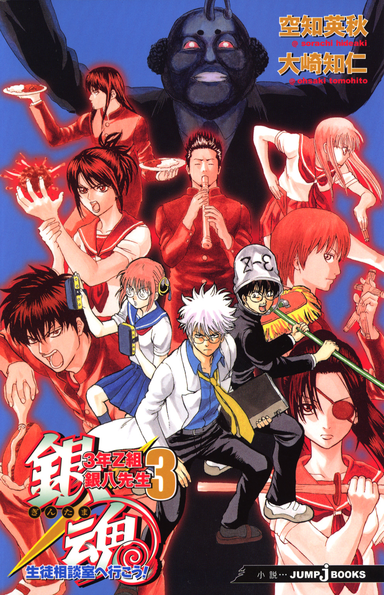
この本は縦書きでレイアウトされています。
また、ご覧になる機種により、表示の差が認められることがあります。
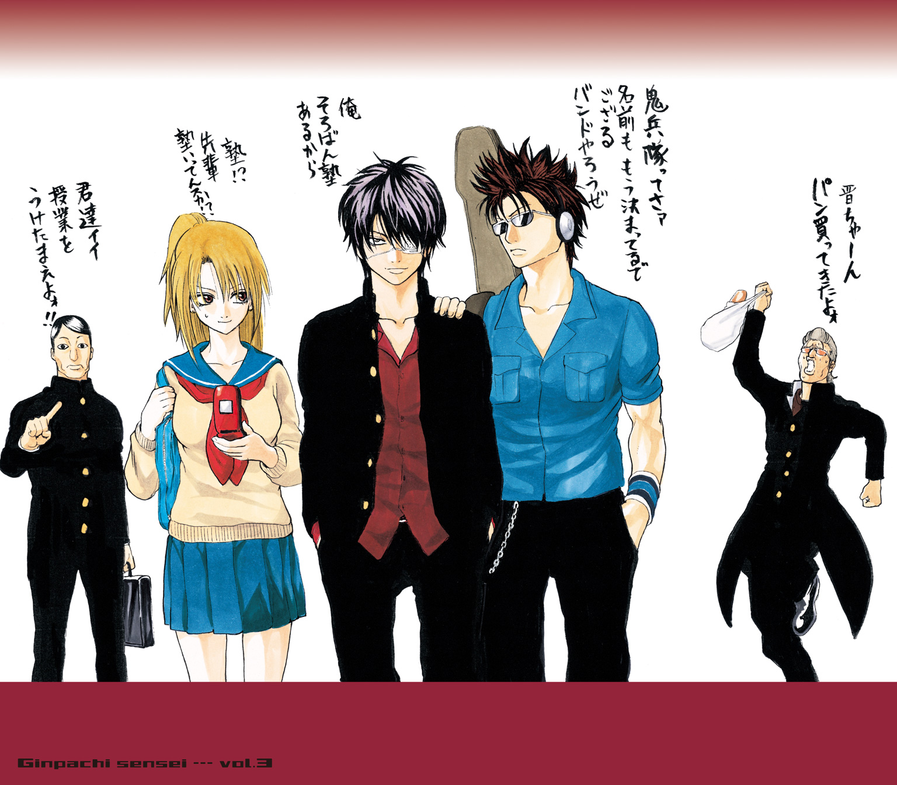
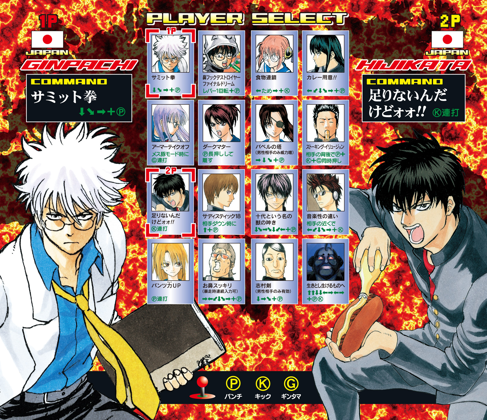
PROFILE
坂田銀八
３年Ｚ組担任。
教師にあるまじき人物だが、なぜか生徒に一目おかれている。
志村新八
Ｚ組の生徒。地味な存在ではあるが、ツッコミ担当。
神楽
留学生。見た目はかわいいが、異常な食欲の持ち主。
志村 妙
新八の姉。楚々とした美人だが、性格は凶暴。
近藤 勲
風紀委員長。妙への強烈な恋心からストーカーと化している。
土方十四郎
鋭い双眸をした、風紀委員会の副委員長。
沖田総悟
甘いマスクのドＳ風紀委員。
山崎 退
カバディとミントンばかりしている目立たない風紀委員。
猿飛あやめ
通称さっちゃん。銀八を愛するドＭメガネっ娘。
桂 小太郎
もの静かな男子生徒。謎の生物エリザベスをペットにしている。
この作品はフィクションです。
実在の人物・団体・事件などにはいっさい関係ありません。
第一講
無理に崖の上で犯人と対決しなくてもいいんじゃね？
青春は人生にたった一度しか来ない。（ロングフェロー）
この名言コーナー、読者はもう飽きてんじゃねーか？（坂田銀八）
シッ！（志村新八）
＊
その日、志村新八がいつもより早い時刻に登校したことに、特別な理由はなかった。
ただ、いつもより三十分早く目が覚めてしまい、その三十分の余裕を、いつもより時間をかけて朝食をとったり、朝の情報番組を観たり、なんてことに使わなかっただけである。早く目が覚めたから、早く家を出て登校した――気まぐれ以外のなにものでもないその行動を、新八はしかし、３年Ｚ組の教室に入った瞬間に後悔することになる。
午前八時五分――。
当然自分が一番乗りだろうと思いつつ、新八は教室の引き戸を開けた。
が、違った。教室にはすでに人がいたのである。
現れた新八に、その人物はなんの言葉もかけてこなかった。いや、言葉を話せる状態になかった、と表現すべきであろうか。教室前方の教卓のすぐそば、つまり、引き戸を開けた新八の数歩先で、その人物はもの言わぬ骸と化していたのである。
骸の顔は、新八も知る顔であった。
銀魂高校風紀委員長であり、新八の姉、お妙を日々つけ回すストーカー――近藤勲。その近藤が、上下体操服姿で仰向けに倒れていたのである。絶命する瞬間の恐怖を焼きつけたかのように、近藤の双眸は見開かれ、虚空を睨んでいた。
始業前の教室に、あるはずのない、あってはならない、級友の死体。いわゆる第一発見者というやつに、この時点で新八はなってしまったのである。
「近藤さん......そんな、連載一回目なのに......」
目を潤ませ、かぶりを振りながら新八は一歩あとずさった。
友の亡骸を正視できず、新八は黒板へ視線をそらした。
と、そこに白いチョークで文字が記されていることに気づいた。
天誅
黒板には殴り書きで、その二文字が記されていた。
天誅......？ 眼鏡の奥で目を細めた新八は、次に黒板の下に奇妙な物を見つけた。
黒い炭、いや、そうじゃない......。
近寄って見てみると、それは黒こげになった酢昆布の残骸であった。誰かが、ここで酢昆布を燃やしたのだ。いつ燃やされたものかはわからない。が、嗅覚に意識を集中してみると、室内にはかすかに焦げ臭いにおいが漂っている。
近藤の死体のそばに、酢昆布の燃えカス。
そして、黒板には「天誅」の二文字......。
基本お気楽な３Ｚシリーズのオープニングシーンにしては、あまりに陰惨な光景。しかし、新八もただたじろぎ、嘆いているばかりではなかった。
「近藤さん......」眼鏡を押し上げ、新八は拳を固めた。「近藤さん！ あとは任せてください！ あなたがいなくても、この３Ｚシリーズ、僕たちはきっとやり遂げてみせます！」
叫んだ直後だった。
近藤ががばりと起き上がった。
「ていうか俺、死んでねーから！」
＊
まあ、死んではいなくても、当然騒ぎにはなるわけである。
「え、ゴリラが倒れてた？」
「酢昆布が燃やされてた？」
「誰がやったの？」
「てか、ノベライズの連載って、それ大丈夫なの？」
なんて、三々五々登校してきた生徒たちが騒いでいると、そこへ現れたのが、天然パーマの白髪頭、死んだ魚のような目、ずれた眼鏡とゆるめたネクタイ、今日もダルさ満開の銀ぱっつぁんである。
「ぎゃーぎゃーうるせーんだよ、おめーら。韓流スターを空港で待ち構えるオバサン連中ですかコノヤロー」
教室の戸口の前でそう言って、いつものように生徒を着席させた銀八。しかし、黒板の文字、酢昆布の燃えカス、さらには生徒たちの表情がいつもとは違うことに気づき、「なにかあったのか？」と片眉を上げた。
「や、実はですね――」
という第一発見者・新八の説明を聞き終えると、銀八は煙草に火をつけて言った。
「なんだよ、死んでなかったのかよ。連載一回目だから死んでた方がインパクトあったのによー」
担任のその無慈悲な言葉に、
「確かにねぇ」と続けたのが、ドＳ風紀委員の沖田総悟である。「やっぱり死んでた方がよかったですよねぇ、土方さんが」
「なんだ、その倒置法は」
こめかみにピシリと血管を浮かべるのは、言わずと知れた沖田の天敵、風紀委員会の副委員長、土方十四郎である。
銀八がなおもブツブツ言う。
「やっぱ死んでんのと気絶してんのとじゃ、インパクトに差があるよなー」
「テユーカ、本当ハ死ンデタコトニシテ、モウ一回最初カラヤリ直セバイインジャネ？」
カタコトで呟いたのは、猫耳腹黒女のキャサリンだ。
「いや、さすがにそれは無理でしょ」
新八が良識的なコメントを出した直後だ。志村妙がガタンと席を立った。
「近藤さん、あなたのことは、グスン、一生忘れないわ！」
「ちょっと姉上！」新八は慌ててたしなめる。「それ完全に『近藤さんが死んでたバージョン』のセリフじゃないですか」
「そうよ。死んでたバージョンでやり直すんでしょ？」
「だから無理ですって。てか、ストーカー被害に苦しめられたからって、それはあんまりですよ」
「いいじゃない。本編の方で生きてれば、こっちの世界では死体になっても」
というセリフを微笑とともに言えるのが妙という女だ。
「まあ、さすがに」と、ここで銀八が割って入る。「今更オープニングやり直すってのも無理な話だ。それに、実は気絶でしたっつーオチでも、一応はいつもと違う感じのオープニングだったわけだし、これはこれでいいんじゃね？」
担任のその一言で、「ま、それもそうですね」的な雰囲気が教室に生まれた。
「うーし、んじゃ、一時間目の現国始めんぞー」
銀八が言って、教科書を手にしたときだ。
「いや、待て待てェェェ！」
死体、じゃなくて気絶体で発見された、当の近藤が立ち上がった。
「いや、おかしーだろ、みんな！」唾を飛ばして近藤は喚く。「俺が朝の教室で気絶してたんだぞ！ 犯人探しするのが普通だろーがよ！」
「犯人ってなんだよ。誰かに襲われたみてーな言い方しやがって」
訝しげに目を細めた銀八に、
「襲われたんですよ！ ぶっ叩かれたんすよ、頭を！ ここにでけータンコブもできてんすから！」
近藤は語気を荒らげて銀八に詰め寄り、後頭部の髪をかきわけて見せた。
「ほら、見てくださいよ、このタンコブ」
「どれだよ？ これか？」
「じゃなくて、もうちょい右」
「右？ これか？」
「いててて！ それそれ！」
という『誰かがタンコブを作ったときにありがちなやりとり』のあと、
「や、でもさ」銀八が気だるげな声で言う。「なんかめんどくせーじゃん、犯人探しなんてよ。どーせ、タンコブ一つなんだろ？」
「だけじゃないっすよ！ なんかこう、体の節々も痛いんすよ！ だからお願いしますよ、犯人探ししてください！」
「しつけーな、おめーは」近藤の大声に顔をしかめると、銀八は教室を見回して言った。「おーい、誰か脳嚙ネウロさんの連絡先知らねーか？」
「他人任せかよ！」
近藤の悲痛なつっこみのあと、
「吞気なこと言ってる場合じゃないネ！」
突然弾けたのが、神楽の怒声だった。
「ゴリラの言う通りアル！ 早く犯人探しするアル！」
「んだよ、お前まで」銀八は白髪頭をかく。「別にいいじゃねーか、ゴリラが誰に襲われよーと」
「ゴリラのことはどうでもいいアル！ 私が言ってるのは、酢昆布を燃やした犯人のことネ！」
そっか、とここで新八は思い至る。
燃やされた酢昆布は神楽の物だったのだ。というより、３Ｚの中で酢昆布と言えば、神楽をおいて他にいない。
「私が非常食として机に入れといた酢昆布が燃やされたアル！ やった奴捕まえて、焼き殺してやらないと気が済まないネ！」
「いや、でけーよ、ペナルティーが。酢昆布燃やしたぐらいで焼き殺すって......」銀八が引き気味に言うと、
「酢昆布憐れみの令ネ！」と神楽。
「いや、どこの暴君？」
鼻白む銀八に、神楽はかぶりを振って言い募る。
「わかってない！ 銀ちゃん、アンタ、私がどれだけ酢昆布のことを愛してるか、アンタわかってないよォォォ！」
『酢昆布の詩』 ３年Ｚ組 神楽
酢昆布って、おいしいね
酢昆布って、素敵だね
酢昆布って、「スコン」とした感じがイイよね
小枝みたいな形したチョコもいいけれど
薄く切ったジャガイモを揚げたやつもいいけれど
だけど、私はやっぱり酢昆布がいいな
無人島に行くときは、酢昆布だな
無人島じゃない島に行くときも、やっぱり酢昆布だな
ていうか、とどのつまり酢昆布だな
酢昆布で思い出したけど
ごめん、やっぱり忘れたわ
「とにかく、酢昆布を燃やした犯人を見つけるアル！」
神楽が叫んだあと、数秒の沈黙を置き、銀八は口を開いた。
「いや、なんの詩だよ、今の」
「そうだよ」と新八も担任に続く。「いきなりポエム挿入されたからびっくりしちゃったよ。やめてよね、トリッキーなボケ」
「私の酢昆布への想いをわかってほしかったアル！」
熱く訴える神楽に続けて、土方も言った。
「先生、俺からも頼むぜ。犯人探し、やらせてくれ」
「おいおい、なんだよ。お前まで学園ミステリごっこかよ」
「ごっこじゃねえっすよ。俺はマジだ。なんせうちの委員長が狙われたんだからよ、このまま泣き寝入りしたんじゃ、風紀委員会の名折れっすよ」
「トシ、よくぞ言ってくれた！」
感涙にむせぶ近藤だったが、一人だけ体操服姿なので、いまいちしまらない。
「先生、僕からもお願いします」
と、ここで新八も立ち上がった。
「やっぱり冷静に考えてみたら、ここはきちんと犯人を探しておく方がいいんじゃないかと......。だって被害者は二人とも３Ｚの生徒だし、現場も３Ｚの教室なんですよ。このまま真相がわかんないんじゃ、僕らも不安ですよ」
新八の言葉に、銀八は「しゃーねえな」と頭をかく。そして新しい煙草に火をつけて言う。
「わーったよ。お前らがそこまで言うんなら、今回の３Ｚは学園ミステリだ」そこで煙をフーッと吐き、銀八はキメ顔を作った。「とことん犯人探し、やってやろうじゃねーか！ あ、カメラこっちか。やってやろうじゃねーか！」
「いや、カメラとかないから！ あんた小説をなんだと思ってるの！」
という新八のつっこみとともに、３Ｚサスペンス劇場は幕を開けるのであった。
＊
さてさて、急遽一時間目の現国を潰して行われることになった犯人探し。
教壇に置かれた椅子に、事件の被害者である近藤と神楽が並んで腰かけ、銀八の仕切りで捜査会議らしきものが始まった。
「つーわけで、まずは状況のおさらいだ」くわえ煙草の銀八がそう切り出す。「第一発見者はお前なんだよな？」
銀八に指さされ、「そうです」と新八は頷く。
「午前八時五分、教室に来たお前は、近藤が倒れているのを発見したと。そんとき、教室の中にはお前と被害者以外に誰かいたか？」
「いえ、それはないです。僕と近藤さんだけでした」
「なるほど。で、現場には酢昆布の燃えカスがあって、黒板にはコレ」と銀八は黒板に書かれた『天誅』を指す。「この二文字が書かれてたわけだな」
「そうです。ちなみに、僕が教室に入ったとき、ほんの少し焦げ臭いにおいが残ってました」
「そうか......。ちなみに誰かが逃げていくのを見たとか、教室に行くまでに誰かとすれ違ったとか、そういうこともねーのか」
「ないですね」
答えながら、うーむ、なんだかほんとにミステリっぽくなってきたぞ、と新八は思う。
「となると、だ......」銀八は顎に手をやり、珍しく真剣な顔で続ける。「やっぱり重要なのは、近藤、お前が気絶するまでにどういう行動をとったか、だな」
「お、俺が......？」
背筋を伸ばした近藤に、銀八は一つ頷いて続ける。
「そう。なぜお前はそんなに朝早く教室にいたのか。そして、なぜ体操服を着ていたのか。そこんところをお前に説明してもらわなきゃいけねえ」
確かに、と新八も大きく頷く。殺人事件だったら「死人に口なし」だけれど、今回は被害者が生存しているのだ。これほど有力な情報源は他にないだろう。
だが、近藤は申し訳なさそうに首を傾げる。
「や、それが、頭殴られたせいか、俺、全然覚えてないんですよね。なんでこーなったか」
「けど、誰かに殴られたってのは、はっきりしてんだろ？ だったらその前後の記憶は多少残ってんじゃねーか？」
「いや、それが皆目」となおも近藤は首を傾げる。「教室を出ようとした瞬間、うしろから頭を殴られたっていう記憶はあるんすけど、その前後となると、さっぱり......」
「なんで教室にいたのかもわかんねえのか？」
「わかんないすねえ」
「いつ頃教室に来たかぐれえはわかるだろ？」
「や、それも」
「なんで体操服着てるのかも？」
「はい」
「なんか一つぐらい思い出せるだろ」
「や、それが笑っちまうくらいなに一つ」
はは、と笑いかけた近藤に、
「てめえはよォォ！」
銀八と神楽が両サイドから渾身のパンチを見舞う。ぼげらっ、と椅子から吹っ飛んだ近藤は、
「てーな！ なにすんすか！ なにすんだよ！」
白髪とチャイナ娘、双方に怒りをぶつける。が、拳を放った二人に反省の色はない。
「おめーがなんも覚えてねーからだろーが！」
「そーアル！ ほんとに使えないゴリラネ！」
「だってしょーがねーだろ！ 頭殴られてんだからよ！ つーか、今のパンチのせいで余計忘れたわ！」
「ちょっと！ 先生も神楽ちゃんも落ち着いてください」早くも爆発した二人を新八が慌てて諫める。「いきなり被害者ぶん殴ってどーすんですか」
「学園ミステリの新しいカタチだよ」悪びれもせず銀八は言う。
「いい感じに言わないでください。てか、今回一応ミステリで行くって決めたんですから、暴力じゃなくて推理で攻めましょうよ」
「同感だな」と新八に続けたのが土方だ。「委員長ぶん殴って犯人が割れるなら世話ねえや」
その冷静な声音に、銀八がピクリと反応する。
「ほう、言うじゃねーかマヨ方。じゃ、おめえはどーやって犯人を挙げるっつーんだ？」
「土方さん、なにかいい方法があるんですか？」
問われた土方は、「まず一つ」と人さし指を立てた。「人を使う」
「人を？」と新八。
頷いて、土方は続けた。「事件の現場がこの教室だってことは確かだ。酢昆布の燃えカスや黒板の文字っつー遺留品も残ってたんだからな。けど、教室の外にだって遺留品はあるかもしれねえし、ことによると目撃者もいるかもしれねえ。つーことで風紀委員！」
土方の鋭い声で、３Ｚにいる風紀委員数名がガタガタと席を立った。
「お前らは外で遺留品探しと目撃者探しだ。総悟、指揮はお前が執れ」
「俺も行くんですかィ？」
不満げに唇を尖らせた沖田に、
「文句言うんじゃねえ」と土方。
「へいへい」と副委員長に低く返し、沖田は風紀委員たちと連れ立って教室を出ていく。
「おいおい、カッコつけた割に、結局人海戦術かよ」
片眉を上げた銀八に、しかし土方は落ち着き払った声で続けた。
「打てる手は打っておいた方がいいっすからね」
「けどよ」とさらに銀八。「今出ていった風紀委員の中に犯人がいたらどーすんだ？ 証拠隠滅されたら元も子もねーじゃねえか」
「その心配なら無用っすよ」腕組みをして土方は答える。「俺たち風紀委員会の結束は一枚岩だ。よもや自分の身内を襲うような奴が風紀委員の中にいるわけもねえ」
「なるほどな。けど、そー言ってるお前に狙いを定めて輪ゴムを構えてるドＳ少年がいるんだけど？」
銀八が顎をしゃくった先――教室後方の引き戸のかげにいるのは沖田。その手には輪ゴムが引っかけられ、あとは土方めがけて発射するだけという態勢になっている。
「遊んでねーで、さっさと行けや！」
怒鳴る土方に、「へーい」と吞気な声を返し、沖田はピュウと姿を消す。
「ま、あいつは例外ってことで」気まずげに土方は言い足す。
「風紀委員を動かすってのはわかった」新しい煙草をくわえ、銀八は続けた。「けど、今のお前の口ぶりだと、ほかにも作戦がありそうな感じだったぜ？」
「作戦って言うほど大げさなもんじゃないすけどね」言って、土方は席を立つ。そして名探偵よろしくゆっくりと歩きながら続けた。「ここらで事件の動機ってのを考えてみるのはどーすか？」
「動機？」銀八は目を細める。
土方は頷く。「黒板には『天誅』なんて言葉が書いてあった。てことは、シンプルに考えりゃ、動機は怨恨ってことになる」
「エンコン？」眉を寄せたのは近藤だ。「おい、トシ。略さずに言え」
「略してねーよ。てか、わかれよ、怨恨ぐらい。一応高三設定なんだから」
「エンコンっていうのはアレネ」神楽が近藤に耳打ちする。「『延長コードって、こんなにも便利』の略アル」
「噓教えてんじゃねーよ。つーか、その人バカなんだから信用しちまうだろーが」
「おい、トシ。俺は普段あんま延長コードのことは考えてねーぞ」
「俺もだよ」頭をかきむしり、土方は続ける。「だからよ、怨恨ってのは恨みのことだよ。あんたを恨んでる人間が犯人だっつってんだ」
「俺を恨んでる？」
「ああ」と頷いた土方に、
「ちょっと待つアル！」と神楽が嚙みつく。「それだけじゃないネ！ 犯人はゴリラと酢昆布、両方に恨みを持ってる人物アル！」
「いや、そんな特殊な奴、あんまいねーだろ。ここはひとまず近藤さんの線から攻めた方がいい」
冷たく返した土方に、神楽はブンブンと首を横に振る。
「わかってない！ アンタ、酢昆布がこの世でどれだけ重要なアイテムか、アンタわかってないよォォォ！」
『酢昆布の詩 ～第二章～』 ３年Ｚ組 神楽
酢昆布の秘密を知ってるかい
酢昆布って、実はＮＡＳＡが開発し
「もういーわ！」土方の大声が神楽の詩を遮る。「お前のシュールな詩なんぞ、興味ねーんだよ」
「酢昆布の重要性をわかってほしかったアル。ちなみにこの詩、第十三章まであるネ」
「ロード？ てか、頼むからちょっと黙っててくれ」
土方は言って、頭痛をこらえるように眉間をもむ。
そこへ、「なるほどな」と銀八の声がした。
「動機から犯人に目星をつけるってわけか。けどよ、そうなると自ずと対象者は限られてくるんじゃねーか？」
言って、銀八が視線を飛ばした先にいるのは――志村妙。
「そ、そんな！」と、妙よりも先に反応してしまったのは新八だった。「姉上が犯人なわけ――」
ないですよ、と続けようとしたが、しかしその声は喉につっかえた。ストーカーゴリラに制裁を加える姉の姿は、新八も何度も目にしている。怨恨という線で妙の名が挙がるのは無理からぬことかもしれない。
言葉に窮した新八は、「姉上......」と妙に顔を振り向ける。が、うろたえる新八とは対照的に、妙本人は涼しげな顔で銀八と土方の視線を受け止めている。
「私は犯人なんかじゃありませんよ」ニコニコと微笑をたたえて、妙は言った。
「アリバイを聞いとこうか」厳しい声で土方が言った。さすが本編で警察をやっているだけあって、その視線は鋭い。「犯行時刻は、おそらく昨日の放課後から今朝の八時頃までだ。この時間帯、どこでなにをしていたか聞かせてもらおう」
「アリバイならあるわよ。昨日は帰りのホームルームが終わったあと、すぐに学校を出ました」
「出て......それから？」
「そしたら、チャラチャラした頭悪そーな男がナンパしてきたから、そいつの財布が空になるまでファミレスでおごらせたわ」
平然としたその口調に、新八は弟ながら戦慄を覚える。と同時に、妙のせいで財布が空になったナンパ男への同情もちらりと。
ファミレスに入ったのは午後五時。八時まではその店にいて、八時半には帰宅した、と妙は説明を加えた。
「夜、家を抜け出して学校に来ることもできるぜ」土方は厳しい声のまま続けた。「犯行推定時刻の幅は広いからな」
「それはないですよ」ここで新八が言葉を挟む。「昨日、姉上は家に帰ってきてからは外出してません」
「お、さすがはシスコン。姉の行動は逐一把握してるってか」
茶々を入れたのは銀八だが、新八もこの程度では腹を立てないようになっている。
「アリバイ成立か......」
言って、土方は軽く舌打ちした。どこかアテが外れたような顔になっている。
「どーすんだ、副委員長さんよ」銀八が挑発するように言った。「志村妙じゃねーとすると、怨恨の線から辿るのは難しいんじゃねーか？」
土方はむっとした表情を浮かべたが、言い返す言葉はなかった。
そのとき椅子を引く音がして、一人の男子生徒が立ち上がった。
「被害者を恨んでいる人間なら、まだいるぞ！」
断定的な口調で告げたのは、長髪の男子生徒、実は学級委員長だった桂小太郎である。
みんなの視線が自分に集まったのを確認すると、桂は奇妙な持ち方でケータイを取り出した。
「どーも、Ｌです」
「余計なモノマネしなくていーんだよ」冷たくつっこんだのは銀八だ。「さっさと先言え」
「被害者・近藤を恨んでる人物。それは――」桂は一人の男子生徒を指さした。「長谷川泰三、あんただ！」
突然名指しされたグラサン無精髭の長谷川は、「ええええ？」と椅子の上でのけぞる。
「ちょ、ちょっと待てよ！ なんで俺なんだよ！」
「理由は簡単だ」余裕に満ちた声で桂は言う。「あんたと被害者は顎に髭が生えているという点で、特徴がカブっている。あんたは髭キャラを自分ひとりのものにしたくて近藤を殺そうとしたんだ！」
「なるほどぉ！」と手を打ったのは神楽だ。「そして、なんやかんやで酢昆布も燃やしたアルな？」
「いや、なんやかんやって適当すぎるだろーが！」長谷川は必死につっこむ。「そもそもなんだよ髭キャラって！ 別に俺、そんなもんにこだわってねーよ！ つーか、髭カブってんのは俺のせいじゃなくて空知のせいだろーが！」
「人のせいにするのはよくないアル」
神楽が疑いの眼差しを浮かべる横で、
「てめぇ......」と近藤は拳を握り締める。「腹の底ではそんなこと考えてやがったのか」
「待て待て、落ち着け！ 俺は絶対犯人じゃねえよ！」長谷川は言い募る。「アリバイがあるんだ、アリバイが！ 俺は放課後も朝もバイトやってんだ。忙しくってお前を襲ってる暇なんかねえよ！」
「そんなアリバイ、時刻表をアレしたら作れるアル」
「いや、アレしたらって、そのアレを説明しろよ！ さっきからなに、このアバウトな探偵さん！」
「ちょっと桂さんも、神楽ちゃんも！」悲鳴のような長谷川の声にいたたまれなくなり、新八が割って入る。「ここまで言ってるんだから長谷川さんは犯人じゃないですって。アリバイもあるみたいなんだしさ」
「しかし、この男は本編で一度逮捕歴があるではないか」
疑ってなにが悪い、と言わんばかりの桂の口ぶりだ。
「そーそー」と神楽も続く。「第一サングラスかけてる時点で犯人キャラアル」
「だからダメなんだってば、そーやって見た目とか雰囲気で決めつけちゃ」
「確かにぱっつぁんの言う通りだ」頷きながら銀八が言った。「見た目や雰囲気で犯人扱いされたら、本人もたまったもんじゃねーよ。つーわけで、早く白状しろキャサリン」
「いや、あんたもやってるよね！ 完全に雰囲気で決めてるよね！」
そうつっこむ新八の目の前で、キャサリンは机の中からコンビニのおにぎりを取り出す。
「スイマセン、主人ニハ内緒ニシトイテクダサイ......」
「いや、万引き主婦のコントとかやんなくていいから！ ていうか、この感じ、いつもの３Ｚと一緒じゃないっすか！ 全然ミステリじゃないよ！」
新八がシャウトしたときだった。
バタバタと足音が聞こえ、沖田が教室に駆けこんできた。
「土方さん！ 事件について重要な証言をしてくれる人を見つけてきやしたぜィ！」
「でかした、総悟！」土方がにやりとして言った。「で、どこにいる？」
「この人でさァ」
と、沖田が連れてきたのは、今日はリアカーに乗っていない武蔵っぽい人。
「いや、ほんとかよ！」即座に土方のつっこみが炸裂する。「ほんとに重要な証言できんのか、この人に」
「勿論でさァ。――さ、あの話を土方さんにも聞かせてやってください」
沖田に促され、武蔵っぽい人は一歩前に進み出た。そして言う。
「......あれは確か、俺が金髪の女と同棲してた頃の話だ」
「おい、帰ってもらえ！」早くも吠える土方。「のっけから関係ねえ話じゃねーか！」
「いや、この話、オチが最高なんでさァ」
「オチとか求めてねーんだよ！ 目撃者探してこいっつったんだよ、俺は！」
言い合う土方と沖田を見るにつけ、ああ、ますます学園ミステリから遠ざかっていく、と新八は頭を抱える。そこへ、
「おい３Ｚ、うるせーぞ！」
と教室に怒鳴りこんできた人物がいた。日本史教師の服部全蔵である。
「おたくのクラスがうるさすぎて、こっちゃ授業になんねーんだよ」
銀八にクレームをつける服部、どうやら隣の教室で授業を行っていたらしい。
「や、わりい」
片手を挙げて詫びた銀八は、かくかくしかじかでよ、と今に至る経緯をざっと説明した。
「ふーん、ゴリラを殴った犯人ねぇ......」
呟きながら、服部はふと黒板の『天誅』の文字に目をとめた。そして「あ」と小さく声を上げる。
「いけね。これ消しとかなきゃ」
そう言って黒板消しに手を伸ばす。
「コラコラ、勝手に消してんじゃねーよ」服部の手を押さえ、銀八が言った。「これだって大事な手がかりなんだからよ」
「手がかり？」怪訝そうな顔を浮かべたあと、服部は「あはっ」と短く笑った。
「なに笑ってんだよ」
「や、ごめん。これ書いたの俺なんだわ」
「は......？」
今度は銀八が、いや二人のやりとりを聞くクラス全員が怪訝そうな顔になる番だった。
服部が朗らかな口調で続ける。
「や、俺さ、昨日の夜、宿直だったんだよ。で、校舎ん中見回りしてたらさ、ふと、『あれ？ 天誅って漢字、どう書くんだっけ？』って思っちゃってさ。ほら、そういうことたまにあんじゃん。あの漢字どー書くんだっけ、なんて不意に思っちゃうこと。でさ、そんとき、たまたまこの教室の前にいたから、ここの黒板に書いてみたんだよね。天誅って。で、俺、あー書けた書けたって満足しちゃって、消すの忘れてそのまま行っちゃったんだわ。なんか、ごめんね」
「いや、ごめんねっつーかさ......」
言いながら、銀八の眉はイライラとひくついている。そんな銀八の変化には気づかず、服部は続ける。
「あ、言っとくけど、俺は犯人じゃないからな。別におたくのゴリラに恨みなんぞないんだから。じゃ、授業中はなるべく静かにしてくれよ」
言い置き、そのまま教室を出ていこうとした服部だったが、そうできるはずもないわけで。
「あのさ、服部君――」同僚の肩を摑み、静かに息を吸いこむと、銀八はカッと目を怒らせた。「まぎらわしーことしてんじゃねーよ！」
怒声とともに服部に襲いかかった銀八に続き、神楽や近藤や土方や沖田や、なぜかキャサリンまでも、服部に蹴りを叩きこんだ。
ふざけんじゃねーよ、てめー！ 意味深な単語書きやがって！ ソンナニ漢字書キタイナラ、漢字ドリルデモ持チ歩イテロ！ おい、こいつにお仕置きだ！ アレ持ってこい、あの、卒業証書とか入れる筒！ あ、先生、なぜか卒業シーズンでもないのに、教室に卒業証書とか入れる筒が！ よーし、持ってこい！
「わ！ ちょ、バカ！ 入れるな！ それは中に丸めた紙を入れる物であって、それ自体をケツに入れちゃ......！ ――ぐあああ！」
服部の悲鳴が教室に響き渡り、やがて消えた。
そして、その悲鳴と入れ替わるようにして鳴り出したのが、一時間目の終業を知らせるチャイムだった。
＊
「残念だが、時間切れだ」教卓に寄りかかり、あまり残念そうには見えない顔で銀八が言った。「これがサスペンスドラマなら、一時間か二時間できっちりおさまるんだが、世の中そうそう都合よく行かねーってことだな」
終業のチャイムが鳴り終わり、ケツに筒を差しこまれた服部を教室から叩き出したあとである。
「これにて犯人探しタイム、終了だ」
そう宣言した銀八に、しかし被害者である近藤は納得がいかなかったようで、「ま、待ってくれよ、先生！」と食い下がる。
「この時間では無理だったけどよ、でも、帰りのホームルームとかで、もっかい犯人探し再開してくれるんだろ？」
だが銀八は「しねーよ」とにべもない。「つーかもう、ミステリっぽいノリ、飽きちまったよ」
「や、飽きたとかそういう問題じゃなくて、犯人がまだ捕まってないじゃないすか！」
「しつけーんだよ。二時間目体育だろ。早く行かねーと遅刻するぞ」
銀八は言って、シッシッという感じに手を振る。
完全に熱の冷めてしまった銀八を見ながら、
――結局、学園ミステリにはなんなかったな......。
溜め息をつき、新八は心中に呟いた。と、そのときだった。
「あら？」
後ろから妙の高い声が聞こえた。振り返ると、妙は自分のロッカーを覗きこんで首をひねっている。
「姉上、どうかしたんですか？」
「私の体操服がないのよ」
「体操服が？」
「そう。昨日まではちゃんとここに入ってたんだけど、誰かに盗まれたのかしら......」
言いながら、妙はすっと視線をある方向に向けた。その視線がとらえた人物は、勿論のこと近藤勲。そして妙に導かれるように、クラス中の視線が近藤に集まるのに、さほど時間はかからなかった。いつのまにか静かになった教室で、近藤はしきりに目を瞬かせている。
「近藤......」静寂を破り、告げたのは銀八だった。「白状しろや」
「や、ちょっと待ってくださいよ！ 白状しろって、なにをっすか！」
「盗んだんだろ、志村妙の体操服」
「ま、まさか！ つーか俺、被害者っすよ！ なんすか、この空気」
「今は容疑者なんだよ。体操服盗難事件のな。てか、よく見たら――」ずれた眼鏡に手をやって、銀八は続けた。「お前が今着てるのが志村妙の体操服なんじゃねーか？ なんかサイズ小せえしよ」
「確かに」と続いたのは神楽だ。「ピッチピチアル」
「ちょっと待ってくれよ！ 待ってくださいよ！ なんで今になって急にそんなこと言い出すんすか！ これまでサイズのことなんか、なにも言わなかったくせに！」
「あれだよ、叙述トリックだよ」
無茶なことを言う銀八だったが、確かに今となっては新八の目にも、近藤の着ている体操服のサイズは小さいように見える。
「そーいや、お前」と銀八がさらに続ける。「タンコブだけじゃなくて、体の節々が痛いとか言ってたよな？ それって、体操服が小せえからじゃねーの？」
銀八の指摘に、近藤ははっとしたように身を強張らせた。そこへ、妙が追い打ちをかけた。
「その――」妙は近藤の足元を指さす。「右足の裾のほつれ。私、自分のだから見覚えがあるんだけど？」
妙のこの一言で、その場にいる全員が確信した。
この男、盗んでいる――。
「や、ちょ、待って......」ピッチピチの体操服で、近藤は露骨にうろたえる。「落ち着こう、な？ みんな、落ち着こう」
「決まりだな......」銀八が静かに言った。
「いや、待った！ そう、思い出した！」声を振り絞り、近藤は反論に転じた。「実は昨日の放課後、俺、学校で寒さに震えてる小猿を見かけたんすよ。で、可哀相だから俺の制服を着せてやったんすよ、その小猿に。で、自分は体操服着て帰ろうと思ったんすけど、間違えてお妙さんのを着ちゃった、みたいな......」
「ゴリラが猿の話すりゃ信憑性あるとでも思ったか？ んな話、信じられるわけねーだろ」
低い声で、銀八は近藤の話を一蹴した。
頭を殴られ、気絶させられた被害者――もはや近藤をそう見る者は、教室には一人もいなかった。まさに急転直下の展開。
そこへ、さっき教室を出ていった風紀委員たちが駆け戻ってきた。
「副委員長！ 校舎裏の側溝で、こんなものを発見しました！」
報告する先頭の風紀委員は、手にゴミ袋を持っている。
「なんだそれは？」尋ねた土方に、
「ウ●コつきのトランクスと学生ズボンです！」
「ウ●コつきの？」土方が目を細める。
「ウンコ●つきの？」と沖田も目を細める。
「いや、お前のそれ、もはや伏せ字になってねえじゃねーか」
土方がつっこんだあと、
「なるほど、そういうことか......」銀八がしたり顔で呟いた。
「先生......」と新八は担任の顔を見る。「なるほどって......？」
「近藤、お前、もらしたな？」
「は......？」
「は、じゃねーよ。志村妙の体操服盗みに入ってよ、お前緊張しすぎてもらしたんだろ。で、これ幸いっつーか、渡りに船っつーか、志村妙の体操服着て帰ることにした、そういうことなんだろ？」
「ま、待ってくださいよ！」顔を赤らめ、近藤は激しく言い立てる。「俺、そんな、ウ●コもらすようなキャラじゃないっすよ！」
「もらすキャラじゃねーか。本編で何回ももらしてんだからよ」
「だからって......」近藤はかぶりを振るが、続く言葉はない。
「ねえ」とここで妙が言葉を挟む。「てことは、あの人、今、下着をつけずに私の体操服を着てるってことかしら？ じかパンってことかしら？」
「そういうことになるな」
銀八の一言で、クラス中の視線が、今度は近藤の股間辺りに向けられた。
近藤勲のアレが志村妙の体操服に、じかに――。全員の頭の中で、それがイメージされた瞬間だった。教室の窓ガラスの一枚に亀裂が入った。こおおお、と殺気を膨らませる妙の仕業だった。臨戦態勢に入る妙の姿に蒼ざめつつも、しかし近藤はなおも抵抗した。
「待ってくれ、先生！ じゃ、じゃあ、酢昆布はどーなるんすか？ 誰が、なんで酢昆布を燃やしたのか、その説明はどーつけるんすか！」
「酢昆布燃やしたのもお前だよ」
「お、俺が？」自分の顔を指し、近藤は目を丸くする。「なんでそんなこと......」
「大方、におい消しだろ」こともなげに銀八は言った。「ナントカ大事典だかナントカ家の食卓だかで言ってたけどよ、トイレでマッチ擦るとにおいが消えんだと。お前もおぼろげにそういう知識があったんだろーな。教室に充満したウ●コのにおいを消すために、お前は酢昆布燃やしたんだよ。ま、ほんとはあれって、マッチの先についてるリンに消臭効果があって、なにを燃やすかは関係ねえらしいんだがな、お前はそこまでは正確に知らなかったんだ。で、多分プリントとか普通の紙燃やすより、酢昆布の方がにおいを消せると思ったんだろ」
「しょ、証拠はあるんすか！」
近藤が叫んだ直後、
「おーい、こいつの机ん中からライター出てきたぞ」
さっき犯人にされかけたグラサン長谷川が、百円ライターを掲げて言った。
「許せない、許せないネ......」聞こえた神楽の声は怒りに震えていた。「そんなことのために、私の酢昆布を......」
こおおお、と息を吸いこみ、神楽も戦闘モードに変わっていく。近藤の顔色はさらに恐怖で蒼ざめていく。
「ま、待ってくれ、万事屋！」
「銀八な。つーか、いい加減、覚悟決めろよ」
「待ってくれって、先生！ だったら......だったら俺を殴った犯人は誰なんすか！ 俺が気絶して記憶をなくしたのは事実なんすよ？」
近藤のその主張は、確かに検討すべきことだった。
記憶をなくしていたからこそ、近藤は銀八やクラスメイトに、犯人を探してくれと懇願したのだ。もし記憶をなくしたという部分までが噓ならば、この男が志村妙の体操服を着て朝の教室に横たわっていたことの説明がつかない。さっさとその場を立ち去る方が、行動としては理にかなっている。
が、この点についても、すぐに説明はついた。銀八が言う。
「お前が記憶をなくしたのは本当だろーよ。俺も頭のタンコブさわったしな。けど、お前は殴られたんじゃねえ。大方鉛筆かなんかで滑って転んで、教卓に頭ぶつけて記憶なくしたんだ。それが真相だ」
「そんな、あてずっぽうで――」
「残念だが、委員長――」その声は土方だった。「先生の言う通りみたいだぜ」
見ると、土方は引き戸のそばで片膝をつき、ちびた鉛筆をつまんでいた。
その瞬間、近藤の逃げ場は完全に失われていた。
「あの、てことは結局......」誰にともなく新八は言った。「姉上の体操服を盗みに来た近藤さんがウ●コもらして、酢昆布燃やして、頭ぶつけただけ......ってこと？」
「ま、かいつまんで言うとな」
銀八が気だるそうに頷いた。
仰々しく幕を開けた３Ｚサスペンス劇場の、これが真相だった。
脱力感と殺意がブレンドされた、一種異様な空気の中、頭にコブを作ったゴリラが一言告げた。やけに清々しい顔で。
「いやぁ、そういうことだったのか。みんな、俺の記憶を取り戻してくれて、どうもありが――」
近藤の言葉は、神楽と妙の飛び蹴りによって途切れた。
銀八は教室を出た。タンコブゴリラへの制裁には興味がなかった。
アンニュイな足取りで職員室に向かっていると、ジャンプスクエアを小脇に抱えた教頭とすれ違った。
ややあって、背後から近藤の悲鳴が聞こえた。それに重ねて教頭の呟きも。
「祝、ジャンプスクエア、新創刊」
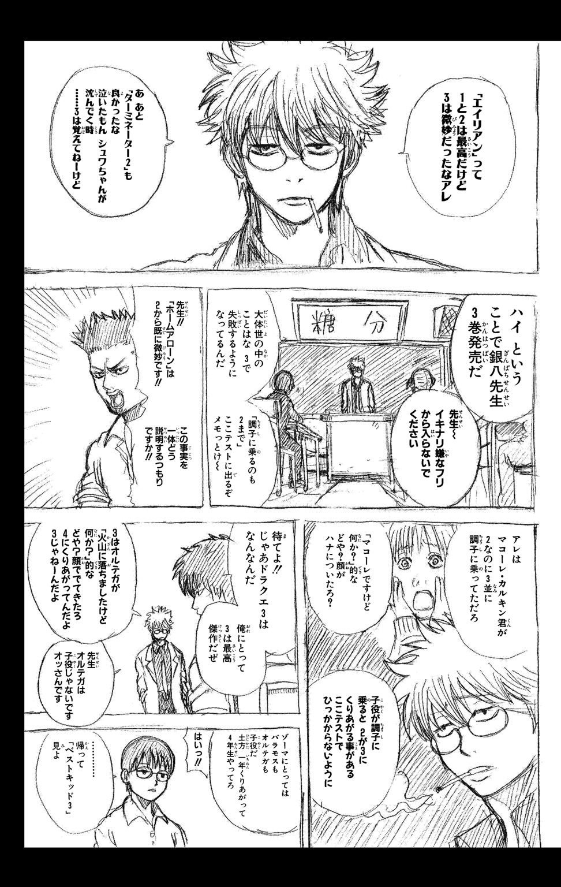
オマケショート劇場 ３Ｚの昼休み・その１
彼は絶望の淵にいた。
完全なる闇、ではないが、それに等しい世界に、彼は放り出されていた。
歩けない、どころか立っていられない。
思わずうずくまり、地面に手をついた。手探りの指先に感じられるのは、ざらついた埃の感触だけだ。
――なぜ？
彼は自問した。なぜ、こんなことになってしまった......？
のどかな日常がこれからも続く、そう信じきっていたのに......。
「事件」が、彼の身に起きていた。
大切なもの、体の一部とまで言っていいものを、彼は失ってしまったのだ。
失った瞬間、彼は呆然とした。泣き叫びたくなった。事実、目尻に涙が浮かんだ。が、声だけはかろうじておさえた。世界が歪み、あらゆるものの境界がぼやけ、そして滲んでいた。
探さなければ、取り返さなければ、失ったものを――。
いや、違う。失ってはいないのだ。どこかにあるはずなのだ。彼が今いる場所から、そう遠くない場所に、大切なものが。
しかし、いまだ、見つからない。
指先がつかむのは、ざらついた感触と、そして虚しさだけだ。
見えない、ぼやけた世界で、人の声や物音だけはくっきりときこえた。その周囲の喧騒が、彼の孤独感を一層募らせた。だが、誰ひとり、彼に救いの手を差しのべてはくれない。
彼が闇の底にいようと、絶望の淵で喘ごうと、これまでと変わらず世界は回り、時は流れるのだ。
不意に恐怖がこみ上げてきた。このままずっと、僕はぼやけた世界で暮らさなきゃいけないのか......？
一度はこらえた魂の叫びが、再び喉奥から突き上げてきた。
――誰か、
――誰か僕の、
こらえきれず、彼はその先を声に出して叫んだ。
「僕の眼鏡を知りませんかァァ！」
ある日の昼休み。志村新八の叫びであった。
自販機でブリックでも買ってこよう、と席を立った。そして歩き出したところで、眼鏡のレンズに小さな埃がついていることに気づいた。息をふっと吹きかけて埃を飛ばそう、と思い、眼鏡を外した。そのとき誰かと肩がぶつかって、手から眼鏡がおっこちてしまい、志村新八は絶望の淵に立った、というわけだった。
「誰か、僕の、眼鏡を――」
さらに言葉を続けようとしたときだった。
「どうぞ、新八君」
誰かの声がした。ぼやけた視界の中でも、わかった。誰かが眼鏡を拾って、差し出してくれているのだ。
じわり、と心が温かくなるのを感じた。
いたのだ、闇の世界にも救世主が。
誰も僕のことなんか助けてくれない、みんな自分のことばかり考えている、無関心、個人主義の蔓延した現代社会、言いたいことも言えないこんな世の中――周囲を呪いかけていた新八だったが、今、救われた。クラスメイトの誰かが眼鏡を拾ってくれたのだ。
「ありがとう」
新八は言って、眼鏡を受け取った。
眼鏡をかけた瞬間、新八の世界はくっきりとした輪郭を取り戻した。
「どういたしまして」
と答えた目の前の人物は、屁怒絽だった。
新八は腰を抜かし、立てなくなったが、無理もないよね。
第二講
昔のジャンプを読みふけっていたせいで
大掃除がはかどりませんでした
余りに考え過ごす者は何事をも成し得ない。（シルレル）
海賊王にルフィはなる！（桂小太郎）
どうしてほしいんですか、桂さん。（志村新八）
＊
大掃除。
英語で言うと、ビッグ・クリーニングである。たぶん噓である。正解は各自で和英辞書を引いておくように。
さて、師走のある日、銀魂高校では大掃除の時間を迎えていた。
学校はもうすぐ冬休みに突入する。だから、その前に一年間の煤を、塵を、埃を、芥を、掃いたり、拭いたり、洗ったりして清めておこう、というわけである。
午前中は通常通りの授業をし、午後の授業をまるまるカットして大掃除にあてる、というのが銀魂高校の方式であった。
チャイム――普段であれば五時間目の始業を告げるチャイムとともに教室に現れた銀八が、教卓に手をつき、くわえ煙草で言った。
「よーし、全員揃ってるかー？ いいか、今から大掃除だ。ただの掃除じゃねえぞ、大掃除だ。気合入れてかからねえと、お前ら......」そこで一度言葉を切り、銀八は眼鏡の奥の目を細めた。「命落とすぞ」
「命って......」と反射的につっこむのは、志村新八である。「それはオーバーでしょ」
「オーバーじゃねえ。いいか、よくきけよ」と言って、銀八は古ぼけた本を開き、読み始める。「大掃除......各家庭で年に一回ないし二回行われる大規模な掃除のことであるが、その起源は古代中国で行われたと言われる集団戦闘訓練にさかのぼる。当時、勇名を馳せていた武術家、『王宋地』が、弟子の育成のため、現在で言うところの箒やハタキに似た形状の武器を――」
「いや、もういいよ！」新八は担任の声を遮る。「民明書房ですか！ てか、『男塾』知らない読者が置いてけぼりになってますよ！」
「いいじゃねえか、いっぺんやってみたかったんだよ、こういうの」顔をしかめ、銀八は不服そうに煙を吐く。「つーか、民明書房刊『家事手伝い――血塗られたその歴史』より、まで言わせろよ」
「こえーよ！ タイトルが！」
新八のつっこみを、「ま、とにかくだ」という一言であっさりとかわし、銀八は続ける。
「大掃除っつーからには、総力戦だ。教室の掃除当番にあたってねえ奴も、当然仕事の分担がある。今からその割り当て発表すっから、よくきいとくように。ああ、ちなみに――」と銀八は煙草を携帯灰皿に消し、続きを言う。「今から言う分担は俺の独断と偏見で決めさせてもらったもんだが、変更の希望は一切受け付けねーからな」
担任のこの言葉で、新八は、むむと唇を結ぶ。銀八の独断と偏見――嫌な予感を抱くなという方が無理な話だ。
新八の心配をよそに、銀八は「じゃ、まずは」と始める。その視線がとらえたのは、長髪の男子生徒、桂小太郎であった。
「実は学級委員長だったヅラ。お前の掃除場所は家庭科教室だ。コンロとか換気扇のまわりのガンコな油汚れを落としとけ」
「先生！」とすかさず桂は席を立つ。「ヅラじゃなくて桂です。それから、どうして僕が家庭科教室に回されるんですか？ しかもガンコな油汚れを落としとけって、それはちょっとした嫌がらせじゃないですか」
「ちょっとした、じゃねえ。本気の嫌がらせだ」
「先生、訴えますよ。刑事と民事の両方で」
「うるせーな」銀八は小指で耳をほじる。「家庭科教室が３Ｚの割り当てなのはマジなんだよ。この通り頭下げるから行ってくれや」
と言いつつ、一ミリも頭を下げないのはいかにも銀八だったが、
「仕方ないですね」
と着席する桂も、まあ、いかにもといえばいかにも。
「うし、じゃ次だ」銀八はだるそうな声で続ける。「ゴリ、マヨ、サド、ザキ。おめーらは男子トイレだ。いつも以上にピカピカにしとけ。便器なんか、もう顔が映るぐらいに」
「先生！」と立ち上がったのはゴリ――近藤勲である。「なんで俺たちがトイレ掃除なんすか！ 納得のいく説明をしてください！」
「ことあるごとにお前がもらすからだよ。トイレピカピカにして、『もうもらしませんように』って、ウ●コの神様によーくお願いしとけ」
「ウ●コの神様って、そんな神様ほんとにいるんすか！」
「おめー、知らねーのかよ」銀八は意外そうな顔で言う。「ウ●コの神様だけじゃねーぞ。シッコの神様だっているんだぜ。黄色のＴシャツ着てよ」
「ぷっ......そ、そんな神様、マジいるんすか？ シッコの神様？ ぷっ、くはは！」
「お前、信用してねーな？ マジでいるんだぞ、ほかにはチンコの神様とか」
「ぶふっ！ チ、チンコの神様！ ぶわはははは！」
「いや、笑いすぎだろ！」キレたのは土方である。「あんた小三？ シッコとかチンコで爆笑してんじゃねーよ！」
「......ウホン。や、すまなかったトシ」
さすがは風紀委員会の長、すぐに表情を引き締めた近藤だったが、
「ゴッド・オブ・チンコ」
という沖田の呟きで、また「ぶはははは！」と爆笑してしまう。
「しつけーんだよ、チンコネタ！」再度キレたあと、土方は銀八に向けて言う。「つーか先生よぉ、委員長がトイレ掃除っつーのは、まあ仕方がねえにしても、俺たちまでそれに付き合わされる理由はないと思うんすけどね」
「風紀委員会の結束は一枚岩なんだろ？」銀八は片眉を上げる。「委員長がトイレ掃除なら、おめーらも付き合ってやるのが筋ってもんじゃねーのか？ いや、もっと言えばだ――」そこで銀八は眼鏡をクイと押し上げて、キメ顔を作る。「大将のケツ拭くのが、おめーらの仕事なんじゃねーのか？」
「いや、この話の流れで『ケツ拭く』とか、やめてほしーんすけどね」
土方は渋面でそう言いつつも、「わかりましたよ」と舌打ちまじりに頷く。
「よし、じゃ次だ」銀八はさらに続ける。「次は教室のワックスがけだが......これは九兵衛と東城、おめーらの仕事だ」
教室の掃き掃除と拭き掃除が終わったあと、机と椅子を廊下に出し、床にワックスをかける――ワックス係に指名された二人のうち、眼帯をつけたワケアリ美少女、柳生の九ちゃんは、
「わかりました」
と素直に返したが、
「お待ちください！」九ちゃんのお世話係、東城歩は異議を唱えた。「なぜ、若と私がワックス係なのです！ いや、私は構いませぬ。しかし、若までもというのは、あまりに無体な仕打ちではないですか！」
「いちいち文句言う連中だな、うちのは」ぼそりと愚痴ったあと、銀八は東城に顔を戻して、きく。「ワックス係のなにが気に入らねーんだよ」
「考えてもみてください。もしワックスがけの途中で、ワックスの飛沫が若のおみ足に、若の美しきおみ足にかかり、そこがかぶれたり炎症を起こしでもしたら、先生はどう責任をとってくれるのです？ 代償としてカーテンの上のシャーってなるやつ一年分もらっても釣り合いませんよ！」
「わかんねーよ、一年分がどんだけか」冷ややかにつっこんだあと、銀八は面倒臭そうに言う。「つーか、そんなに心配ならジャージでもはいときゃいいじゃねーか」
「ジャージーはいけません！」と東城はさらに吠える。「スカートの下にジャージーをはくようなスタイルは、現代的かもしれませんが、格式ある柳生家の子女にはふさわしくありません！ わかりました、もう結構です！」ここで勝手に話を打ち切り、東城は九ちゃんを力強く振り返る。「若！ こうなったらワックス対策として、スカートの下にジャージーではなく、黒と白の横じまのオーバーニーソックスを――」
だが、当然のことながら最後まで言えず、九兵衛の昇龍拳ばりのアッパーカットを食らい、撃沈する。
「ま、どんなカッコでもいいけどよ、とりあえずワックス係は頼むわ」
銀八の言葉に、九兵衛がこくりと頷き、この件は落着。で、担任の話はさらに続く。
「んじゃ、次だ。次は、季節的にちょいとハードかもしれねえが、体育館の裏の草むしりっつーミッションがある。これにあたってもらうのは、ぱっつぁん、神楽、マダオ、おめーら三人だ」
「あの、先生......」
新八が遠慮がちに挙手すると、
「却下だ」と銀八。
「早い！ てか、まだなにも言ってませんよ！」
「んだよ」銀八はアンニュイな視線を新八に向ける。「おめーも、なんか文句あんのかよ。変更は受け付けねーつったろ？」
「それはわかってますけど、でも、一応は理由をきかせてくださいよ。なんで僕たち三人が草むしりなのか」
「あ、俺もききてーな」と新八に続いたのは、サングラスのマダオ、長谷川である。「独断と偏見っつっても、なんかあるんでしょ、理由っぽいものが」
「先生、私もききたいアル！」丸眼鏡をかけた留学生の神楽も続いた。「どうして私たちが草むしりなのか！ そして、どうしてこの世から争いがなくならないのか！」
「いや二個目の質問、でかすぎるでしょ」と新八。「てか、今きくことじゃないしね」
そこへ、銀八が重々しく語り出す。
「いいか、神楽。人間というものは、この世に生まれ落ちた瞬間から生存のための――」
「いや、それ答えなくていいから！」慌てて担任を止める新八。「今、ききたいのは草むしりの方ですよ！」
「この世に生まれ落ちた瞬間から、生存のための草むしりを宿命づけられてるんだ」
「いや、そっちだったのかよ！ てか、どんな宿命？」
新八がそうつっこんだときだ。一人の男子生徒が席を立った。
「なぜ君たちが草むしりか、そんなに知りたいのなら教えてやろう！」
声の主――誰かと思えば、家庭科教室に回された、桂小太郎である。
「桂さん......？」
呟いた新八の目の前で、桂は奇妙な持ち方をしたテレビのリモコンを額に押し当てた。
「どーも、『Ｌ』改め、ひらがなの『し』です」
「意味がわかんねーよ、なに一つ」銀八の冷淡なつっこみが入る。「お前は、ほんとにどこに向かおうとしてんだ？」
だが、担任の声を無視し、狂乱のバカ貴公子は続ける。
「どうして君たち三人が草むしり係なのか、３Ｚの名探偵である僕が教えてやろう。――いいか、君たち三人には一つの共通点がある」
「共通点？」と新八。
「そうだ」桂は頷く。「君らは今、三人とも眼鏡をかけている。マダオさんに関してはサングラスだが、これも眼鏡の一種だ。そしていいか、ここからが大事だ。眼鏡は英語で言うと、『glass』の複数形、そして草は『grass』......おわかりかな？ 両方グラス、というわけだ」
言い終えて、口元に薄い笑みを浮かべる桂。しかし、その説明――正直微妙だった。驚き二割、戸惑い八割、の空気が教室を満たしている。「お、おぉ......」みたいな。
そんな空気の中、やり遂げたような表情を浮かべる桂に、
「ヅラ」と銀八が声をかけた。
「ヅラじゃありません。今は、ひらがなの『し』です」
「うん、つーか、むしろ漢字の『死』を与えたいよね、お前には。どーすんの？ このビミョーな空気」
「両方グラス」
「うん、もうきいたから、それ。てか、全く関係ねーから、それ。いいから早く座るか、もしくは転校してくんねーかな」
という銀八の言葉で、ようやく『し』は着席する。
銀八は新八に顔を戻す。「今のバカの説明は忘れろ。悪い夢だ」
「そうします......。ていうか、僕ももう、草むしりになった理由なんか、どーでもよくなっちゃいました」
新八の言葉に噓はなかった。全てを混沌の真っ只中に叩き落とす、それが桂の破壊力。
さらに掃除の分担の発表が続き、やがてそれも終わった。
新しい煙草に火をつけ、銀八がまとめるように言う。
「――ま、教室の掃除当番以外の割り当ては大体がそんなとこだ。つーわけで、お前ら、真面目に掃除しろよ。俺は職員室で年末年始のテレビ欄チェックしてっから」そこで煙を吐き、銀八はにやりとした。「......じゃ、大掃除始める前に、恒例のアレやっとくか」
恒例のアレ？ と訝る新八の前で、銀八が言った。
「エイエイ」
「オー掃除！」
と新八以外の生徒が拳を突き上げる。
「だせえ！」と新八。「てか、いつ決めたんですか、そんな掛け声！ 僕だけハブ？」
＊
「気になるな」
「気になりますな」
と話すのは、校長のハタと教頭のじいであった。
場所は校長室である。今日は年に一度の大掃除。全校生徒総がかりということで、校内各所から校長室にきこえてくる喧騒も、普段の掃除の時間よりもスケールアップしている。
「ほんと、大丈夫なのかな。すげー気になるんだけど」
デスクでハタが言い、
「ほんとに気になりますな」と応接セットでヤンジャンを読みながら教頭は言う。「『夜王』の続きが」
「いや、それじゃねーよ」額に血管を浮かべ、校長はじいを睨む。「いや、『夜王』の続きも気になるけど、今はそれじゃねーよ」
「『ハチワンダイバー』ですか？」
「漫画の話じゃねえから。てか、カブせんな、ボケを。怒り倍増すっから」デスクをバンと叩き、校長は続ける。「３Ｚのことに決まっておろうが、余が言うておるのは」
「あー」と気のない声を返し、教頭はようやく校長のデスクの前に立つ。「あいつらが真面目に大掃除してるかどうか、ですか？」
「それじゃ、それ。こういうイベントのときは、大抵バカなことをやるからな、あのバカどもは」
「担任が担任ですからね」
という教頭の一言で、校長の脳裏に忌まわしき白髪男のヘラヘラ顔がよぎる。
心なしか痛みが慢性化している触角の根元をさわりながら、校長は言った。
「ちゃんと監督しとるんだろーな、あいつは、自分のクラスを」
「してるわきゃないでしょ」半笑いで教頭は言う。「おおかた、職員室で年末年始のテレビ欄でもチェックしてんじゃないですか」
舌打ちし、校長は立ち上がった。「一応、釘をさしておくか......」
というわけで、職員室。
銀八のデスクにやってきたハタとじいは、校長室での予想が、半分当たり、半分外れていたことを知る。
３Ｚの担任、坂田銀八は、予想通り大掃除の監督をうっちゃらかして、自分のデスクにふんぞりかえっていた。が、手にしているのはテレビ雑誌ではなく、古いジャンプであった。デスクの上にも、そして銀八の足元にもジャンプのバックナンバーが散乱している。
「や、坂田君さ......」校長が言う。「君、こんなとこでなにやってんの？ なんでこんなにとっちらかしてんの？」
「なにって、大掃除っすよ、俺も」ジャンプに目を落としたまま、しゃあしゃあと銀八は答える。「年末年始のテレビ欄チェックが終わったもんでね、んじゃ、いっちょ俺も大掃除すっかと思って、古いジャンプの整理し始めたんすけど、いやー、こういうのって読みふけっちゃいますねー。全然はかどんないっすわ」
「いや、はかどるはかどらない以前にさ」と校長。「仮にも高校教師が職員室の机のまわりジャンプまみれにするのって、どーよ？」
「素敵でしょ？」
「ごめん、きき間違えたかも。もっかい言ってくれる？」
「素敵やん？」
「なんで関西弁？ てか、島田紳助さん？」きこえよがしに咳払いし、校長は教頭に言う。「教頭、君からもなんとか言いたまえ」
「お、懐かしい。『メゾン・ド・ペンギン』じゃん」とジャンプを手にする教頭。
「いや、一緒になって読んでんじゃねーよ！」校長はブチ切れたあと、「ちなみにメゾペンは新連載一回目なのに表紙を飾れなかったんじゃぞ！」とプチ知識。
「校長さんよ」ここでようやく銀八が校長に顔を向ける。「隣でぎゃーぎゃー騒がないでもらえます？ 俺の大掃除はかどんないっしょ」
「いや、余としては、君の頭の中を大掃除したいくらいなんじゃがな。てか、君はジャンプの整理の前に、自分のクラスの大掃除に行くべきじゃろうが」
「行かなきゃまずいっすかね？」
「当たり前じゃろうが。担任の仕事を放棄してどーする。あんまグータラだと、冬のボーナス返してもらうよ？」
「......わーりましたよ」銀八は渋々椅子から立ち上がると、散乱するジャンプに顎をしゃくった。「じゃ、俺が行ってる間、その古いジャンプ、ビニール紐で十字にくくっといてもらえます？」
「あー、アレってコツがあんだよね......ってバカモン。なんで余がそんなことせにゃならんのじゃ。さっさと大掃除の見回りにファッキン行きたもれ」
校長にせかされた銀八は、「へいへい」と白衣の上から尻をかきつつ、職員室を出ていく。安物のサンダルのアンニュイな足音が引き戸の向こうに消えると、
「全く、オールシーズン困った男じゃな」
校長は嘆息まじりにそう呟く。その横でジャンプを手にした教頭が一言。
「『サムライうさぎ』の志乃ちゃんカワイイなー」
「おめーは全然かわいくねーけどな」
握り拳を固め、校長は教頭を睨む。
＊
「あのバカ、ちゃんと掃除してんだろーな」
くわえ煙草で呟きつつ、銀八はまず家庭科教室に向かっていた。職員室からだと３Ｚの教室よりも、こちらの方が近かったからである。
家庭科教室に着き、引き戸を開けた銀八。
と、教室の前方、教師が使用する調理台のまわりに女子生徒が集まっているのが見えた。そして、人だかりの中心にいるのは桂。
油で真っ黒に汚れた換気扇の羽根や焦げついた鍋を、いくつも台の上に並べ、桂は女子生徒たちに熱弁をふるっていた。人だかりの後方に立った銀八には気づいてもいない。
「――はいっ、いいですか、皆さん。このガンコな油汚れを見てください。ここまで汚れたら、市販されている普通の洗剤じゃ落ちませんよ。ところが、こちら、このドイツ製の超強力洗剤、その名も『ブロッケン・ジュニーア』を使えば......見てください、こうやって、ちょっとスポンジにつけて擦っただけで、ほら！ ほーらほら！ ね？ みるみる汚れが落ちていくでしょう？」
女子生徒たちから「わあ～」と歓声が上がる。
「力を入れて擦る必要はないんですよ。スポンジで軽く、優しく撫でるだけでいいんです。この鍋だって、ほら！ ほーらほら！ 見てください、これ、新品じゃないですか、まるで！」
「ヅラ」と銀八は呼んだ。
「しかも、皆さん。今日はこれだけじゃないんです」
「だから、ヅラ」
「こちらのスチーム噴射式の洗浄機、その名も『カナディアンマン２号』、これに今の洗剤が入ったタンクをセットしてみますと......ほら！ ほーらほら！ シンクの水垢がみるみる......あ、そこの白髪のお客さん、見えてますか？」
「見えてるよ！ つーか、別に見たくねーし！」
銀八がブチ切れたことで、女子生徒たちは潮が引くように調理台から離れていく。
「あ、皆さん、買っていかないんですか、『ブロッケン・ジュニーア』と『カナディアンマン２号』！」
慌てて女子生徒を引きとめようとする桂に、
「コラ、ヅラ」静かな口調に戻して、銀八は言った。「おめー、なに掃除サボって実演販売なんぞやってんだよ。てか、そもそもどこから仕入れたんだ、この怪しげな商品は」
「や、あの、僕の親戚のおじさんが代理店やってまして......」
「リアルな説明だな、オイ」つっこんだあと、銀八は溜め息とともに煙を吐く。「つーかさ、もういいから、とりあえず掃除しろや掃除、な？」
「わかりました」神妙に頷き、桂は言った。「じゃ、掃除にかかる前に、このポータブルオーディオプレーヤー、『ステカセコング』の紹介だけ――」
「しつけーんだよ！」
＊
「ほら！ ほーらほら！」と言って、水の入ったバケツをぐるぐる回すのは沖田だった。「これぞ遠心力パワー」
「すげえじゃねーか総悟！」目をキラキラさせてそれを見つめるのは近藤である。「なんて勇者なんだ、お前は！」
男子トイレである。「いつも以上にピカピカにしとけ」と銀八に言われた風紀委員会の面々。
しかし、トイレに来るや、沖田は『遠心力でバケツの中の水がこぼれない』技を披露し、近藤はそれを見てピュアに感動している。でもって、いつものように一人イライラしているのが土方であった。
「いい加減にしろ、おめーら」デッキブラシを手に、トイレの奥に立った土方が言う。「いつまで遊んでんだよ。さっさと終わらせねーと帰れねーぞ」
「けどよ、トシ。やっぱり総悟のテクは半端ねーよ」近藤はしつこく感動している。「あれ、やろうと思っても、恐くてなかなかできねえもんなんだぞ」
そこへ、沖田の声がきこえる。
「リバース！」
見ると沖田、前に回していた腕を、今度はうしろ回しに切り替えている。
「出たよ、リバース！」近藤の声が大きくなる。「見ろ、トシ。総悟のリバースだ！」
「いや、正式名称っぽく言うんじゃねーよ。回す方向変えただけだろーが」
「難しいんだぞ、あれ。急に切り替えるのって、すげーこえーんだから」
「感動しすぎだろ。どこまで小三なんだよ、あんたは」なおもバケツを振り回す沖田を一瞥して、土方は続ける。「そもそもこえーとかそういう問題じゃねえ。高三にもなって、あんなことする奴は単なるお調子モン――」
と、その瞬間、「発射！」という声とともに、沖田がバケツの取っ手から手を放した。まっすぐ自分の方に飛んできたバケツを、土方はすんでのところでかわす。ガン！ バシャア！ と床に水がぶちまけられる。
「てめっ、なにすんだコラ！」
怒る土方に向かって、沖田は涼しげな顔で言う。
「すいやせん。『沖田もバケツの誤り』でさァ」
「勝手なことわざ作んじゃねーよ！ つーか『発射』つってる時点でわざとだろーが！」床に転がったバケツを拾い、土方は溜め息まじりに続ける。「......総悟、もういい加減飽きたろ。さっさと掃除しろや」
「相変わらずノリがわりー人ですね、あんたは」一度唇を尖らせてから、沖田は「あ、そーだ」と言葉を継ぐ。「じゃ、土方さん、俺、真面目に掃除しやすから、その代わり土方さんも一回これやってみてくださいよ。バケツ・ローリング・フェスタ」
「バケツ回しでいいじゃねーか、なんだその名前」
「やってくださいよ」と沖田は繰り返す。「それを見てから、俺掃除しますから」
だが、土方は取り合わない。「ふざけんな。なんで俺がそんなガキみてーなこと......」
「こえーんすか？ 水かぶるのが」
沖田のその一言に、土方はピクリと眉を動かす。言い方。声のトーン。全てが土方の神経にさわる。
「こえーわけねえだろ。馬鹿馬鹿しいからやんねえだけだ」
「恐くねえんだったらやってくださいよ。一回でいいんで」沖田の口元に腹黒そうな微笑が浮かぶ。「俺、土方さんのフェスタ見てーなー」
沖田の悪ノリ。無視するのがベストだと土方にもわかってはいる。だが、そうできない性格が、土方の土方たる所以でもある。
「上等じゃねーか」土方は言って、水道のホースを空のバケツの中に入れた。「ただし一回だけだぞ」
「あざーす」と軽い声で沖田。
八分目まで水を満たしたバケツを持ち、土方は沖田にメンチを切った。そして言う。
「見とけ総悟、俺のフェスタ」
最初は振り子のように腕を前後に揺らし、徐々にその揺れを大きくしていく。そしてタイミングをはかりながら、
――ここだ！
その瞬間、腕を力強く回転させる。
水はこぼれなかった。ぐりんぐりん回しても、一滴もこぼれなかった。
「はっはっは！ どうだ総悟コラ！ これぞ遠心力パワァァァァ！」
言った直後だった。ものすごいスピードで飛んできたたわしが、土方の顔面にヒットした。
「うおっ!?」
腕の回転を乱した土方は、当然バケツの水をモロにかぶる羽目に。
ガラランと床に転がったバケツが、土方の足に当たって止まったとき、沖田の声がした。
「すいやせん、土方さん。『沖田もたわしの戯れ』でさァ」
「ユニークなことわざだな......」全身ずぶ濡れ、前髪からポタポタと水滴を垂らしながら、土方は言った。
「よ、水もしたたるウゼー男！」
「総悟......」土方は低く呟いたあと、クワッと目を見開いた。「てめーは血ぃしたたらせてやらァァァ！」
沖田に躍りかかっていく土方に、近藤が叫ぶ。
「待て、お前ら！ 暴力はいかん！ 正々堂々バケツマンシップにのっとって......」
「どんなシップだそれはァァァ！」
水びたしの副委員長が怒鳴り返したとき、トイレの入り口に白衣の担任が立った。
「いい加減にしろてめーら」気だるいが、不思議とよく通る銀八の声である。「予想通りバトルロワってんじゃねーか。掃除しろや掃除」
担任の登場で、ひとまずは乱闘回避。不本意ながらも報復の拳をおろした土方だったが、しかし一応は主張しておいた。
「言っとくが先生、俺ぁちゃんと掃除してたんだぜ。あのサド野郎のせいでこうなったんすよ」
「掃除してたって、お前」驚いたように銀八は目を見張る。「そんな汗だくになるまで掃除してたのか？ 死ぬぞ」
「いや、これ汗じゃねーから！ 俺どんだけ頑張り屋さん？」
バケツを回していたら、沖田の妨害に遭い、水をかぶってしまった。土方は説明したが、銀八は沖田を叱ったりはしなかった。
「ま、バケツ両成敗だな」と、よくわからないことを言う。「けしかけた方も悪いが、乗る方も悪いっつーことで」
「納得いかねえ......」
土方は口の先で呟く。と、はたと気づく。そういえば、奴がいない。
「おい、ところで山崎はどーした山崎は」と沖田にきく。
「あー、山崎なら」沖田はトイレの前の廊下を指す。「あそこでカバ......おっと今日はミントンしてますぜ」
「山崎ィィィ！」例によって叫びながら土方は走り出す。「オグシオ効果かァァァ！」
＊
バカツラは家庭科教室で実演販売。
風紀委員会は男子トイレでバケツロワイヤル＆ミントン。
「たく、どいつもこいつもよ」くわえ煙草で歩きながら、銀八はかぶりを振る。「どうしてこう、掃除の一つもろくにできゃしねーんだろーな」
そして辿り着いた３Ｚの教室。すでに机と椅子は廊下に運び出されていて、戸口の脇に九兵衛が立っていた。
「おーい、終わったのか、ワックスがけ」
銀八にきかれた九兵衛は、「や、それが......」と一瞬口ごもる。
「僕はやるといったのですが、東城が頑としてきき入れてくれなくて......」
――若は見学していてください。ワックスがけは私一人でやります。
そう言って、東城は九兵衛にモップすら持たせてくれなかったそうだ。
「お前さんのおみ足がそんなに心配なのかね」銀八は片眉を上げる。「過保護なこった」
「すいません、先生」
小声で詫びる九兵衛に、
「ま、いんじゃね。楽できて」
銀八がそう返したときだ。教室からモップを手にした東城が出てきた。
「あ、先生。今ちょうど終わったところです」
「ごくろーだったな」銀八は言って、「どら」と戸口から教室の中を覗きこむ。
教室の床一面がワックスのおかげでキラキラと光沢を放っている。普段は変態お世話係として、ツッコミどころ満載の東城だが、どうやら今日の仕事だけは真面目にこなしたらしい。ふむ、と納得しかけた銀八だったが、いや待て、と次の瞬間その顔が曇る。
床一面の光沢――キラキラっつーより、これ、テラテラって感じじゃね？ と思ったのだ。
足は廊下に残したまま、銀八は指先で教室の床の一部に触れてみた。かすかなぬめり――ワックスにはあるはずのないぬめりがある。
「東城、お前これ、なに塗ったの？ てかこれ、ローションじゃね？」
「ああ、気づかれましたか」東城は悪びれた様子もなく、というよりむしろ得意げに言った。「そうです、ローションです」
「いや、そんな胸張って言われてもよ......」
「滑り具合を高めるには、やはりワックスよりはこちらがベターだと思いましてね」
「ベターじゃねーよ、お前これ、ワーストだよ。なにこの淫靡な感じ。『３年Ｚ組』っていう名前の、そういう店だと思われたらどーすんの？」
「先生、冗談が冴えてますね」
「冗談じゃねーよ。つか、だんだん腹立ってきたわ。そもそもお前、こんなヌルヌルの床歩けねーじゃねーか」
「大丈夫ですよ。コツさえつかめば、ほら、私のように軽やかに」
そう言って、ピョーンと教室に飛び込んだ東城。だが、着地した瞬間にすっ転び、したたかに後頭部を強打する。
「やっぱ無理じゃねーか！」
「だ、大丈夫ですよ、今、立ちますからね――」と言いながらも、再び東城はズリンと転び、床で顎を強打。なんとかまた立ち上がろうとしたが、ズリン！ そしてガン！
ズリンとガンを連発し、ローションまみれになっていく東城の体が、なんだかもう粘液に包まれた謎の生命体のように見えてくる。
「いや、もうホラーじゃん！」銀八は悲鳴とつっこみをミックスさせる。「ものっそい気持ち悪くなってんだけど！」
「せ、先生、今、そっちに戻りますから......」全身ヌルヌルの東城がうめくように言う。
「いや、もう来なくていいから！ お前はそこに住め！」
「大丈夫、ですよ。ズリンとガンを繰り返し、人間は成長するものなのです......」
「出会いと別れみてーに言うんじゃねーよ！ てか、マジキモいから近寄るなって！」
そのときだ。教室の片隅からバンという音がきこえた。視線をそちらに向けると、掃除道具入れの扉が開け放たれている。
中にいたのは、ロングヘアのドジっ子眼鏡――さっちゃん。
ケータイを片手にさっちゃんが言う。
「ちょっと、さっきからうるさいわよ！ 今、ケータイで私と先生の夢小説書いてるんだから、邪魔しないでくれるかしら！」
「いや、当たり前の顔して出てくんじゃねーよ、そこから」
銀八のつっこみをきき、さっちゃんはポッと頰を染める。
「あら、先生、そんなとこにいらした――」
「あ、バカ！ 出んな！」
という銀八の声と、さっちゃんの足が教室の床に降り立つのが同時だった。そして当然ながらさっちゃんもズリン！ そしてガン！ 眼鏡が吹っ飛ぶ。ローション東城にローションさっちゃんが加わり、淫靡度がさらに倍増する。
きゃあああ、うわあああ、せんせぇ～！ 喚きながら全身を粘液でベトベトにし、床の上をのたうち回るバカ二人。銀八はもはやこう呟くしかなかった。
「腐ってやがる......。バカすぎたんだ」
「先生」隣に立つ九兵衛が静かに言った。「ワックスがけ、やり直しておきます」
「頼むわ」
そう言って九兵衛の肩に置こうとした手を、銀八は慌てて引っこめる。
男性アレルギーの九兵衛――触れた途端、ぶん投げられて、自分もローションの海へ、なんて展開はバカすぎる。
＊
寒空の下、体育館の裏で草むしり。確かに最初はきつい作業だと思った。
けれど、三十分も経つと、額にはうっすらと汗が浮かび、体は十分に温まっていた。軍手をはめ、雑草を抜き、抜いた雑草を一か所に集める。単純で単調な作業だが、そのぶん無心になってやれるのがよかった。久しぶりにかぐ土の匂いも、どこか懐かしい感じがした。
立ち上がり、腰をトントンと叩く。空を見上げると、今日は太陽がよく照っている。
「うーん」と伸びをして、新八は呟いた。「こんな日も素敵かもしんない」
直後、定春がぶつかってきて、新八は雑草の山に突っこんだ。
「なんかサムいこと言ってるダメガネ、轢いちゃったかもしんない」定春にまたがった神楽が言う。
雑草の山から身を起こし、新八は怒鳴った。
「かもじゃないよ！ 事実轢かれてます！ 草もちょっと食べました！」ペッと雑草を吐き出し、新八は口調を改める。「てか、だめじゃないか、神楽ちゃん。草むしりサボっちゃ」
「天気がいいから定春もテンション高いネ。私も定春と遊ぶの久しぶりだから楽しいアル」
「いや、そんな風に無邪気に言われちゃうと、僕も注意しにくいんだけどさ......」弱った顔になりつつも、新八は少し離れたところにいる長谷川を指さす。「ほら、ああやって長谷川さんも真面目にやってんだから、神楽ちゃんもやんなきゃ」
新八がそう言ったあと、
「うーわ、こりゃボーボーだな」
と長谷川の声がきこえた。
「そんなに生えてますか？ そっちの方」
と声をかけた新八に、
「おお、こりゃちょっと濃すぎだわ」
そう返す長谷川の手元を覗きこむと、そこには誰かが捨てたハードなエロ本が開かれている。
「いや、ボーボーってそっちかい！」と新八はシャウト。「うっすら嫌な予感はしてましたけどね！」
「バカ、全然うっすらじゃねーよ。ボーボーだよ」
「しつけーよ！ てか今、最低の会話してますからね、僕たち！」
「隊長！」とそこに神楽も入ってこようとする。「どの程度ボーボーでありますか！」
「いや、見なくていいから！ 神楽ちゃんにはまだ早いから！」
「副隊長は黙っていてください！」
「いや、なんの隊だよ、これ！ こんなに嬉しくない副隊長、初めてなんだけど！」
なんて、ワーワー騒いでいるところへきこえたのが、銀八の声である。
「おいおい、ローションの次はエロ本かよ。我が教え子ながら情けねーぜ」
「先生！」と新八は振り返る。「や、違うんです、これは......」
「これは、副隊長殿の秘蔵コレクションであります！」と神楽。「かなりボーボーとのことです！」
「いや、違うから！ ガセネタ流さないよーに！」
「ま、なんでもいいけどよ。さっさと草むしり終わらせてくんねーかな。俺もこのあとジャンプの整理とか、いろいろあんだよ」
と言いつつも、銀八は長谷川の手からスルリとエロ本を抜き取り、自分のスラックスの腰に差し込む。
「いや、ジャンプの整理の前に、それ見るの丸バレじゃないですか」
新八が冷ややかに言うも、銀八は取り合わず、「いいからやれって、草むしり」と繰り返す。
「でもよ、先生」とこれは長谷川だ。「やっぱ俺たち三人だけじゃきついっすよ。ここ結構広いっすもん」
「定春もいんじゃねーか。あいつにも手伝わせろよ」
「いやアレ、犬だし。肉球じゃ草つかめねーし」
長谷川が言い返したときだ。定春がさかんに吠え始めた。
「ほれ見ろ」と銀八。「僕だって草むしりしたいワン、つってるぞ」
「勝手な翻訳っすね......」
という長谷川の声と、
「違うヨ、先生！」
という神楽の声が重なる。
「先生！ 定春、なんか掘り出したみたいアル！」
新八たちから数メートル離れたところにいる定春。見ると、確かに定春の足元の土が掘り返されている。
「おいおい、徳川埋蔵金とかじゃねーだろうな」
懐かしいことを言う銀八を先頭に、新八たちは定春に歩み寄っていった。
定春が掘った穴、その傍らに転がっているのは、金属製の筒のようなものだった。ボウリングのピンを小ぶりにしたぐらいの大きさ。全体が土にまみれ、錆が浮いている。
「なんだ、これ？」と銀八。
「水筒、ですかね。遠足に持っていくような」これは新八。
「おい、これアレじゃねーか」と長谷川の声が高くなる。「昔のブリキのオモチャ！」
「あー確かに！」新八も頷く。「そうかもしれませんね。これ、ロケットみたいな形してますもん」
「ブリキのロケット！ かっけー！」
神楽が声を上げ、手を伸ばそうとしたが、
「待て待て」銀八がそれを止める。「慎重に扱えって。アレだろ、こういうのって売るとたけーんだろ？ ナンチャラ鑑定団とかでも、よくやってんじゃん」
「そうそう！ モノによっちゃ何十万もするんすよね！」興奮した口調で長谷川が言う。
「もしそうなら、こいつの手柄だな」
銀八が言って、定春の頭をポンと叩く。
高く売れたら分け前どーするよ？ とりあえず定春が一番多く取るネ。いや犬じゃん。ちょっと高いドッグフードとかでいいだろ。
なんて、だんだん盛り上がりだした話の輪に、しかし新八は加わらなかった。
なにかが引っかかる。なにかが気になるのだ。
オモチャ、という意見に一旦は自分も賛成した。が、どうも違うような気がする。オモチャにしては、どうも全体のフォルムが子ども向けっぽくないのだ。錆のせいで消えてしまったのかもしれないが、カラフルな色が塗られていたようにも見えない。これはオモチャというよりは、もっと無機質な、情緒のない、ある意味実用の品、例えばミサイルとか爆弾とかそういうたぐい――
思考がそこに至った瞬間、新八は卒倒しかけた。ば、ばく......。
アワアワと息を喘がせ、絶え絶えに声を出す。
「あ、あの、皆、さん......」
「なんだよ？」
「どーした？」
「なにアルか？」
三人が同時に新八に顔を振り向ける。
ゴクリと唾を飲みこみ、新八は言った。
「あの、これ、爆弾......不発弾とかじゃ、ないですよね......？」
直後、場の空気が凍りついた。
数秒沈黙が続き、その沈黙は銀八の声で破られた。
「いやいやいやいや、それはねーだろ新八先生！」
「そそそそーアル！ これは絶対ブリキのオモチャネ。なんかこうブリッとしてるもん！」
「ふはふは不発弾っておめー、じょじょ冗談きついぜ！」
言いながらも、三人とも顔が蒼ざめている。
「や、だって......」新八の声は、おもっくそ震えている。「見てくださいよ、デザイン的にやっぱこれ爆弾っぽくないすか？ それにブリキのオモチャが土に埋まってるって、やっぱ変だし、それだったら昔の爆弾が埋まってる方がありえそうだし、そう思いませんか？ ねえ、そう思い――」
不意に静かになったので顔を上げると、定春以外はもう誰も残っていなかった。
新八の背後――二十メートルほど向こうに三人は避難している。
「ちょ、ちょっとォォォ！」三歩でみんなのところに駆けつけ、新八は涙目で抗議する。「置いてくなんてひどいじゃないですか！」
「バ、バカ、おめーがぼんやりしてるからだろーが」と銀八。「俺はちゃんと、ぱっつぁん、行くぞって声かけたぞ、心の中で」
「いや、発声しなさいよ！ そこは発声しよう！」
「定春！」と神楽が呼ぶ。「お前も早く来るアル！ それ爆弾アル！ 危ないヨ！ 死んじゃうヨ！」
定春は神楽に一度吠え返すと、すぐに新八たちのところへ駆け寄ってきた。爆弾をくわえて。
「いや、それいらねーから！」声を振り絞って銀八が叫ぶ。「置いてこい！ 置いてからこっちこい！」
「定春！ 置いてくるアル！ バーンてなるヨ！ バーンて！」
みんなの必死の叫びに、なにかを感じ取ったのだろう、定春は元の位置に爆弾を戻し、改めて駆けてくる。
これで、とりあえずは全員が爆弾から離れることができた。が、そもそもあの爆弾の威力が未知数である以上、どの程度距離を置けば安全なのかはわからない。
「ど、どーすんですか、先生」長谷川がすがるように言う。「俺、こんなとこで死にたくねーっすよ」
「お、落ち着け」銀八は長谷川だけでなく、その場にいる全員に向けて言った。「こうなったら警察呼ぶしかねーよ。あのままほったらかしとくわけにもいかねーだろ。一一〇番だ」
そう言って、銀八は丸めたエロ本を耳に当てる。「もしもし？」
「いや、あんたが落ち着こう！」新八と長谷川がユニゾンでつっこむ。「早く電話！ ケータイ！」
＊
というわけで、銀八のケータイから一一〇番へ通報し、状況を説明する。
そして約五分後、現場である体育館の裏に警察の人間が到着した。
「お待たせしました！ 本庁警備部の爆発物処理班、ハジでやんす！」
紺色の制服を着て、そう名乗るのは、まだずいぶんと若い女の子だった。
「おいおい、大丈夫なのかアンタ一人で」銀八は露骨に不信感をあらわにする。「モノは不発弾だぜ？ 爆竹やかんしゃく玉じゃねーんだぞ」
「ご心配なく。おっつけ、あちきの上司が来ますから。で、本当に不発弾なのかどうかも、その人に調べてもらいましょう」
ハジが言うのとほぼ同時に、バイクのエンジン音がきこえてきた。
振り返ると、アメリカンタイプのバイク――ハーレーダビッドソンが近づいてくる。
新八たちのそばに停車したバイク。またがっているのは、サングラスをかけた、太い眉と太いモミアゲの男だった。
「アニキ！ じゃないや警部、ご苦労様です！」とハジ。
「遅くなってすまなかったな」バイクから降り、男は低い声で名乗った。「俺は本庁のバク処理、小銭形平次だ」
「警部さん、早く！ あっちに爆――」
しかし、言いかけた銀八を遮り、小銭形はうつむいて独白する。
『俺には仕事にかかる前の儀式のようなものがある。取るに足りない、まじないのようなものだが、このこだわりを守り続けてきたからこそ、今日まで生き永らえてきたのかもしれない』
「マスター」と小銭形は銀八に言う。「カミュ、ロックで頼む」
「いや俺、マスターじゃないんで。ティーチャーなんで」と銀八。「なにこの、エセハードボイルドおじさん。もうこの時点で期待値サゲサゲなんだけど」
『マスターがいない――。いつもの習慣が崩れるとき、それはなにかが起こる予兆でもある。どうやら今日の任務、ハードなものになりそうだ』
「なんですか、このカギカッコの使い分け」新八も言った。「すげーウザいんですけど」
「それで」とマイペースに小銭形は続ける。「その不発弾とやらはどこにある？」
「あそこだよ、あそこ」銀八は定春が掘り返した穴を指さす。「早くなんとかしてくださいよ、生きた心地しねーんすから」
言って、銀八が煙草をくわえた瞬間だった。
「バカモーン！」小銭形は銀八をぶん殴り、その手から煙草を取り上げた。「ここは爆発物を扱う現場だぞ！ 煙草など言語道断だ！」
「あ、そか。すんません......」
『現場にいる一般市民は、ときに任務遂行の支障となる。少々乱暴な言葉遣いで叱責してやることも必要なのだ。だが、そのあとのフォローも欠かせない』
「殴ってすまなかったな」と小銭形は口調をやわらげる。「しかし俺の仕事が終われば、いくらでも吸ってくれていい」
そう言って、小銭形は葉巻をくわえた。
「いや、おめーは吸うのかよ！」銀八は殴り返す。「つーか、いいからさっさとバク処理しろよ！」
「わかっている。しかし、ものには順序というものがある。まずはブツの形状の確認だ」小銭形は言って、オペラグラスで観察する。「うーむ、なかなかにやばそうなブツだな......」
「やっぱアレ、不発弾で間違いないですか？」新八がきく。
「いや、錆の程度から見て、軍関係の不発弾ではないだろう。しかし！ 爆発物であることには間違いない。しかも、相当な殺傷力と見た」ゴクリと唾を飲み、小銭形は告げた。「よし、とりあえず一旦ＢＡＲに戻って作戦を練るぞ」
「いや、ＢＡＲとかねーから」と銀八。「ここ、学食ぐらいしかねーから」
「そこでいい。学食をＢＡＲと呼ぶことにしよう。セルフサービスのカウンターが、なんかＢＡＲっぽい」
「強引すぎるだろ！」銀八がつっこむ。「てか、さっさと仕事しろって！」
「あ、そうだ警部さん」ふと思ったことがあり、新八は小銭形にきいた。「普通、爆発物処理班って、ゴツい装甲車みたいなので来るんじゃないんですか？ ほら、映画とかだとそうじゃないですか。今日はそれ来ないんですか？」
「残念だが」と小銭形は首を横に振る。「班の特殊車輛は全て他の現場に行っている。ここには来られない」
「他の現場って、ここ以外でも爆弾が見つかったんですか？」
「いや、『週刊特殊車輛』という雑誌のグラビア撮影に駆り出されていて、一台も残っていない」
「グラビアかよ！」新八はキレる。「じゃ、一台くらいこっちに回してくださいよ！ てか、週刊でそんな雑誌があることも驚きだよ！」
『本当は俺もその撮影の方に行きたかった。しかし、班でハブられている俺は、そっちには加えてもらえなかったのだ。まあ、黙っていればこいつらにはわからないことだが』
「いや、ダダもれですよ！ つーか特殊車輛なしで、どーやってここの爆弾処理するんですか！」
『子どもの頃、母方のおじいちゃんが言ってくれた。平次は頑張ればなんでもできる子だよ、と。だから、今日も頑張れば多分できるんじゃないかな』
「いや無理だろ！ じーちゃんの言葉だけをよりどころにして爆弾処理しないでください！」
「心配するな。俺は爆弾のプロだ。いいか？ 爆弾ってやつは冷却してしまえば爆発の危険は少なくなる。そうやっておいてから安全な場所まで運ぶんだ」
「おお、そういやきいたことあるぜ、そういう話！」と長谷川。
「初めてプロっぽいこと言いましたね」と新八。
「というわけで、ハジ！ コンビニでありったけの『冷やペタシート』買ってこい！」
「いや、あんたバカだろ！」新八のシャウト。「素人考えでも『冷やペタシート』じゃ無理だってわかるわ！」
「じゃ『熱しゃまシート』だ！」
「だからシートから離れろ！ ああいうタイプの商品でなんとかしようとすんな！」
『いちいち口うるさい眼鏡だ。こいつだけ爆弾でケガしちゃえばいいのに』
「最低だよ、こいつ！ 職業倫理ゼロじゃねーか！ てか、さっさとなんとかしてください！」
「わかっている。こうなったら、直接あの爆弾をここから運び出すしかない。なーに、慎重に動かせば爆発なんぞしないはずだ。というわけで、ハジ、お前が行け」
「おいおい」と長谷川。「この子、部下かもしんねーけど、女の子だぞ？ あんたが行けよ」
ハジが言う。「警部、すいません。実はあちき、今日深爪してまして、指が痛いんです。だから心苦しいんですが、警部にお願いできたらと......」
「悪いがハジ。俺も今、靴の中に小石が入ってて動けねーんだ。というわけで、君たちの中の誰かが――」
「おい、もうチェンジだチェンジ！」業を煮やして銀八が怒鳴る。「もう、こいつらじゃねえバク処理呼んだ方がいいぞ！」
『屈辱だった。この仕事を始めてから今日まで、チェンジなんて言われたこと、あたいは一度だってなかった』
「いやもうキャラ変わってんじゃねーか！」と銀八。「エセハードボイルドですらねーよ！」
そのとき、神楽が叫んだ。
「ダメアル！ 定春！」
その声で全員の視線が定春に向く。
見ると定春、トコトコと爆弾の方へ歩いていくではないか。
「戻るアル、定春！」
しかし定春は止まらない。爆弾のそばまで行くと、クンクンと鼻を寄せ、そしてあろうことか、爆弾をくわえて左右に振り始めた。
「だめえええ定春ううう！」
「それオモチャじゃないからあああ！」
「うわあああ爆発するううううう！」
絶叫する新八たちの横で、小銭形はゲボロロロロと嘔吐。
『助かりたい助かりたい助かりたい助かりたい』
「いや、アンタはどこまでも勝手だな！」
新八がつっこんだ直後だった。
カランという音が響いた。定春の口から爆弾が落ちたのだ。
「――！」
時が止まり、空気が凍りつく。
爆発......は起こらなかった。
「あれ......？」最初に声を出したのは新八だった。「ねえ、あれ見てください。爆弾の先っちょが取れてますよ」
地面に転がった爆弾は、二つに分離していた。先端の部分が外れ、空洞になった胴体が見える。
「......おい、あれ爆弾じゃねーんじゃねーか？」と銀八。「中カラッポじゃね？」
「そうすね......」と長谷川も。「なんかの容器？」
「おい、どーなんだバカ処理」
神楽がきき、全員の視線が小銭形に注がれる。
『意外だった。爆弾と思えたものが、そうじゃなかった。しかし、万分の一、億分の一の確率で、プロの読みも外れることがある。そして、だからこそ、この仕事は面白い......ということにしてもらえないかな』
「結局言い訳なんじゃねーか！ てか、おめーら、もう帰れ！」
銀八にケツを蹴っ飛ばされ、小銭形はバイクにまたがる。
アクセルを一回吹かし、小銭形は片手を挙げた。
『湿っぽい別れは嫌いだ。それに君たちとは、またどこかで会えるような気がしている。ケータイのアド教えとこーか？』
「いるかボケェェェ！」
という全員のつっこみを背に受け、小銭形のバイクは走り出し、「警部～！」とハジがそのあとを追いかけていった。
さて。
小銭形とハジが去り、新八たちは改めて爆弾......というか爆弾っぽいなんかの筒に歩み寄った。
おっかなびっくり腰をかがめ、新八は空洞になった胴体の方を覗きこんでみる。
「あ、なんか紙入ってますよ」
新八が言うと、
「おいおい、埋蔵金の地図とかか？」爆弾じゃないとわかったからだろう、銀八の声は普段の調子に戻っている。「出してみろよ、ぱっつぁん」
そう言われ、新八は筒を拾い上げた。ゆっくりと手を入れ、中の紙片を取り出す。
縦書きの便箋、それが一枚。文字も書かれていた。
「手紙っぽいですね」
「手紙ぃ？」と銀八。
みんなが新八のまわりに集まり、手元を覗きこんできた。
古い便箋――文面はこうだった。
『口下手な僕は、こんな形でしか君への想いを伝えられません。
あなたを前にすると、いや、あなたを遠くから見つめるだけで、僕は言葉を知らない赤子のように、何も言えなくなってしまうのです。
だけど紙の上では、僕は雄弁家です。
あなたへの想いが、あとからあとから湧きあがってくるのです。
あなたは可憐だ。あなたは気高い。あなたは温かく、優しい。そして、あなたは可憐だ。
いや可憐って二回言ってるじゃん！ ......今、あなたはそうつっこんでくれたでしょうか。
だとしたら、僕たちの相性はぴったりです。
許されるならば、僕はあなたと交際したい。
どうか、僕の想いを受け入れてほしい。
愛しいあなたへ
君を知ってから微熱が続いている恋男』
「これラブレターですよ」と新八。
「ラブレターはいいけどよ......」と煙草をくわえながら銀八。「いてー文面だな」
確かにイタい、と新八も思った。だが、同時に思い当たったことが一つ。
この手紙がここにあるということは、つまり「愛しいあなた」なる人物に、この手紙は届いていないということだ。
と、そこで気づく。金属の筒の正体に。
「そうか。きっとこれタイムカプセルなんですよ。渡せなかったラブレターをこの中に入れて、学生時代の思い出を残したかったんですよ、この恋男さんは」
「いい話じゃねーか」と長谷川。「青春だねぇ」
「けどこれ、誰が埋めたんだろーな」煙を吐き、銀八が言う。
「まあ、これだけ古びてますから、今いる在校生ってことはないでしょうね。だいぶ前の卒業生なんでしょうけど......」
そこへ、声がした。
「ここにおったのか、坂田君」
振り返るとハタ校長。隣には教頭も立っている。
「坂田君、君の教室、ローションでヌルヌルじゃないか。なんだあれは」
「いや、あれは生徒の一人が......」
と銀八が説明しかけたとき、校長が新八の持っているラブレターに目をとめた。
「あああーっ！」
「校長？ どーかしたんすか？」と銀八。
「きき君たち！」校長の声が上ずる。「勝手に掘り出しちゃダメじゃん！ それ余のタイムカプセルなのに！」
「えええええええ!?」
新八と銀八と長谷川が声を揃え、
「マジでかっ！」
神楽が目を見張る。
「このラブレター、校長が書いたんですか！ てか校長、ここの卒業生だったんですか！」
新八が問うと、
「読んだのか？ おいおい、恥ずかしいではないか～」青白いハタの顔色に、ポッと朱がさす。「や、まあ、書くには書いたが、どうしても相手に渡す勇気がなくての。んふ、ふふ」
「いや、恥じらうんじゃねーよ、ハタのくせに」と銀八。「なんかもう、普通に気持ちわりーよ」
「あーあ、感動して損したぜ」と長谷川。
「なーにが恋男だ。チョーチンアンコウみてーな顔面さらしやがってよォ」これは神楽。
「いや、お前ら鬼？」ハタが引き気味に言う。「人の恋文勝手に読んどいて、その罵詈雑言」
「そうですよ皆さん」と新八。「これは校長にとっては大切な思い出の品なんですよ」
そうたしなめたあと、新八は「ハックショイ！」とくしゃみをかまし、手紙に鼻水と唾を盛大にぶっかける。
「いや、お前マックスじゃん！」校長は怒鳴る。「台無しの仕方、マックスじゃん！」
とにかく、と言葉を継ぎ、校長は口調を改める。
「そのタイムカプセルはもう一度埋め直してくれ。余の大切なメモリーなんじゃ」
「おい、中に鼻くそとか入れとこーぜ」銀八がにやつく。
「いや、お前らどこまでイジメっ子気質？ お願いだから、そっとしといてくれないかな、余のメモリー」
「つーかさ、校長」と銀八。「タイムカプセル埋めんのはいいすけど、こういうまぎらわしい形はやめてくんないすかね。俺ら、爆弾と勘違いしたんすよ？」
「あ、や」校長は苦笑いする。「そういうのも一興かなと思って......」
そのときだ。神楽の声が上がった。
「先生！ 定春がまたタイムカプセル掘り出したアル！」
何メートルか向こう、またぞろ定春が穴を掘ったらしく、穴のそばに校長のものとよく似た形のタイムカプセルが転がっている。
「おいおい、何個埋まってんだよ、ここは」
「まさか、今度のはお前のじゃないだろーな？」と校長が教頭に言う。
「なわけねーだろ」教頭は鼻で笑う。「俺はタイムカプセルみてーなダセーことしねーよ」
「ダサくねーよ！ タイムカプセルってピュアじゃん！ 素敵やん！」
「ま、いいやな」と銀八。「ついでにあのタイムカプセルも開けてみよーぜ。そうすりゃ、誰のかもわかるしよ」
「ちょ、だめですよ、先生」新八が止める。「校長先生のは不可抗力で開いちゃいましたけど、タイムカプセルは本来、埋めた本人が開けるもんですから」
と新八が言っているそばから、
「かてーな、この蓋」
銀八はさっさと二個目のタイムカプセルを開けようとしている。
「いや、僕の話きいてましたか？」
しかし銀八はきく耳なし。なおもタイムカプセルを振ったり叩いたりしている。
「おいコレ、全然開かねーよ」
「どっかに開け方とか書いてないんすか？」長谷川がきく。
「ちょっと待てよ」と言って、銀八はカプセルをためつすがめつ調べる。「あー、なんか錆びててよく読めねえけど、ここに『軍』って字が書いてあ――」
ドオオオオオン。
＊
翌日の朝刊各紙。社会面には次のような見出しが並んだ。
――『高校で不発弾が爆発 重傷者数名』
――『体育館全壊 あとかたもなく』
＊
大部屋の病室。
ずらりと並んだベッドの上で、新八たちは包帯だらけになっていた。
「ギャグ漫画の爆発で死人は出ない、っていう業界ルールがあって助かりましたね」新八が天井を見つめて言った。「まあ、これは小説ですけど」
「つーかセリフの割合が異常に多いけどな、この小説」隣のベッドで銀八が言う。
「早く読めるから、いんじゃね？」と神楽。
「あーあ、新しいグラサン買わねーとな......」レンズにひびの入ったサングラスをかけた長谷川が呟く。
「いや、今そんなことどーでもいいから」ブリブリ怒っているのはハタ校長である。「あのな、君たち。体育館が吹き飛んだんじゃぞ。どーすんのアレ、焼け野原みたいになってんのよ？」
「ま、大掃除の一環ってことで」と銀八。
「いや、大掃除じゃねーよ！ 大赤字だよ！」キレたあと、校長は隣のベッドの教頭に言う。「おい、お前からもなんとか言え」
「祝、ジャンプスクエア......」
「もう創刊してんだよ！ これ連載二話目だから！」
そのとき一番奥のベッドから、きき覚えのある声がした。
「あ、看護師さん。カミュ、ロックで」
「いや、おめーもケガしてたのかよ！」
包帯姿の小銭形に、３Ｚの四人が同時につっこんだ。
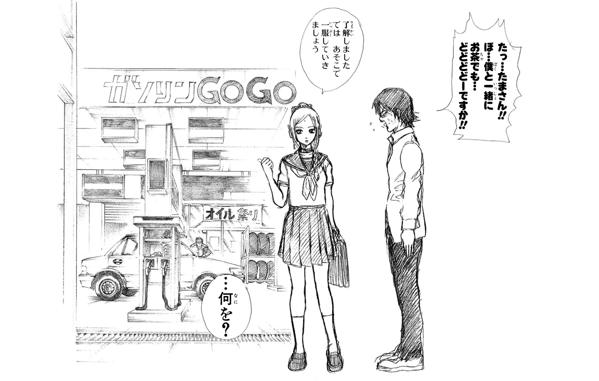
オマケショート劇場 ３Ｚの昼休み・その２
ごちそうさまでした。
土方十四郎は、食べ終えた弁当を鞄にしまうと、机に置いてあった小さなボトルに手を伸ばした。
お茶や水やジュースの入ったボトルではない。中身はマヨネーズである。弁当のおかずやご飯にかけるための、ではなく、食後に、それ単体で味わうためのマヨネーズである。
一般人からすれば、奇異な習慣であろうことは、土方も十分に自覚している。普通昼休みに高校生が飲むものは、自販機で買ったブリックのたぐいであろう。決してマヨではないはずだ。
だが、土方十四郎は味わう。昼休み、弁当を食べ終えたあと、マヨネーズを。
なぜ、と問われれば、土方はこういう答えを用意している。
――そこにマヨネーズがあるからだ。
詭弁でもなければ、ましてや妄言でもない。マヨネーズがあるから、俺は味わうのだ。これ以上の言葉は不要だ。そこに山があるから登るのだ、と述べた登山家の気持ちが、土方にはよくわかるのだった。
今、土方が手にしたマヨネーズ入りのボトルは、キャップの先端からストローが突き出た、土方お手製のマヨ専用ボトルであった。
そして、お手製なのはボトルだけでなく、中身のマヨもまた、お手製であった。母ちゃんではなく、土方自身が作ったマヨが入っているのである。
昨夜作り、今朝ボトルに詰めてきたマヨ。
土方はストローに口をつけ、指先でボトルの側面を押した。
押し出されたマヨがストローを通って口の中に流れこむ。
舌で、それを味わう。
悪くは、なかった。が、うまい！ とは言い切れないなにかが含まれていた。ちゅうちゅうとマヨを味わいながら、土方は考えた。
うまいという評価を下せない原因は、どこにあるのか。
昨夜の製造過程を思い出してみる。
卵黄と酢とサラダ油。混ぜ合わせる順番を間違える、などという初歩的なミスは犯していない。土方とて素人ではないのだ。
混ぜ方が不足していたというわけでもなさそうだ。泡立て器を動かすときは、それこそ小宇宙を燃焼させるほどの勢いで動かしたのだ。今、舌先に感じるマヨの滑らかさも、混ぜ方に問題がなかったことを裏づけている。
となると、あとは他の材料だろうか。
マヨを構成するメインの要素は、あくまで卵黄と酢と油だが、それ以外にも胡椒、砂糖、お好みでレモン汁、などが使われる。
だが、それらの分量も、投入のタイミングも問題はなかったはずだ。
どこだ？
このマヨの問題は、どこにある？
土方は鋭い眼差しで、マヨを味わい続けた。
「僕の眼鏡を知りませんかァァ！」
誰かの声がきこえたが、構わなかった。考えることに集中した。
なにかが、ある。確実に、なにかが。ごく微量だが、味の統一を阻害するものが、このマヨの中に。
思い出せ、俺。
昨夜のマヨ作りを。
本当に正しい材料を、正しい分量で、正しいタイミングで使用したのか、俺。
刹那、土方は答えに辿り着いた。
アレだ。アレがまずかったのだ――。
気まぐれに加えた、ほんの少量の、アレ。
バニラエッセンス。
いつもとは違う味を、という軽いノリだった。いや、「ひょっとしたらオリジナルなおいしさが生まれるんじゃないか？」という邪心もあったかもしれない。魔が差した、という言い方もできるだろう。
いずれにせよ、土方は加えた。混ぜる途中で、バニラエッセンスを。そのせいで、このマヨは失敗作になった。
ふっと自嘲気味の笑みを浮かべ、土方は心中で呟いた。
――魔が差してバニラエッセンス。
まるで歌のタイトルのようだ、と思った。全く売れそうにない歌のタイトルだ、ということも。
「やっぱり、アレが問題だったんだな......」
昼休み、土方十四郎の呟き。
風紀委員会のクールな副委員長が、校内で新たに取り締まるべき対象を思いついた――あるいはそんなふうにもきこえる呟きだった。が、彼の言う「アレ」が、少量のバニラエッセンスであることは、誰も知らないし、また知る必要のないことであった。
第三講
誰も見ていないところでミラクルを起こす奴がいる
朕は国家なり。（ルイ十四世）
チンコさわってないって。腹がかゆいんだって。（前担当・大西）
柊あおい、好きっス！（現担当・齊藤）
このページに出てもギャラは発生しませんよ？（志村新八）
＊
♪ブン、ブン、ブン、読書感想文
などと口ずさんでみても、読書感想文を書く難しさは、いっこうに緩和されないわけである。悲しいかな、これは厳然たる事実なのである。
しかし、そういう事実が存在するにもかかわらず、学校というところは生徒に読書感想文を書かせやがるのである。小学校でも中学校でも、そして高校に上がっても、少年少女は読書感想文から逃れられないのである。
ま、ともかく、である。こういう文章で幕を開けたことからおわかりの通り、今回の３年Ｚ組は読書感想文がテーマなのである。
それではどうぞ、なのである。
冬休みの明けた、一月初旬。昼休みの校長室。
イライラした口調を隠そうともせず、ハタ校長は言うのだった。
「休み明け早々こんなことは言いたくないんじゃがな、坂田君。しかし、どーしても言っておかねばならんことがある」
「そんなに言いたくねーなら言わなきゃいーじゃないすか」銀八は、どてらを着て炬燵に入り、ＰＳＰでモンスターハントに余念がない。「よっしゃ討伐ゥゥ！」
「や、あのさ」と校長は咳払い。「どっかの漫画家じゃないんだから、おもっくそ正月スタイルでモンスターハンターしまくるのやめてくんない？ 校長室で実家気分？」
「そーですよ、坂田先生」校長の横で教頭も言う。「いつまで正月ボケしてるんですか」
と言いつつ教頭は羽子板で肩を叩きながら、砂糖醬油で焼いた餅を箸でつまんでいる。
「いや、おめーもだよ」額に血管を浮かべ、校長は教頭を睨む。「正月気分満開じゃん。しかも、よく見たらおめー、ちょっとだけ太ってんじゃん」
「いやー、正月に餅食いすぎて太っちゃいましたよ」
「うん、あるけどね、冬休み明けにそういうこと......って、今はそんなあるあるネタ、どーでもいいから」ダンとデスクを叩き、校長は銀八に顔を戻す。「坂田君、いいからこっちに来たまえ」
「へいへい」銀八はＰＳＰをポケットにしまうと、校長のデスクの前に立った。「で、なんすか？」
「今日君に来てもらったのはほかでもない」校長は厳しい顔になると、「おい」と教頭に声をかけた。「坂田君にアレを」
「わかりました」と頷き、教頭は焼いた餅を皿に載せて銀八に差し出した。「海苔巻くと美味いぞ」
「いや、餅じゃねーよ！ 余計なもんふるまってんじゃねーよ！ なんかこう町内会っぽい雰囲気出してんじゃねーよ！」
「ちょ、校長、そんらに、怒らなくても、いいじゃらいすか」と言いながら、銀八は餅にかぶりついている。「あふ」
「いや、早速食ってんじゃねーよ！ 餅にかぶりついて、にゅーって箸で伸ばしてんじゃねーよ！」
「校長も食べまふ？」
「その『まふ？』が腹立つわ！ その語尾が！ 教頭、いいから出せ、アレを。もうボケんなよ」
教頭も今度はボケなかった。ポケットから一枚の紙片を取り出し、銀八に差し出す。
受け取り、銀八は紙片に目を落とした。
「かぶき町青少年読書感想文コンクール......？ なんすか、これ」
「先週の職員会議でも説明したはずじゃがな」校長はしかめ面を作る。「かぶき町が主催する読書感想文のコンクールじゃ。我が校も高校生の部に応募するから、生徒に読書感想文を提出するよう指示しろと、そう言っておいたはずじゃがな」
「あー。そーいや、そんなこと言ってましたね。すーっかり忘れてましたよ」悪びれもせず、銀八は言う。「なんせ討伐するモンスターが多くて」
「吞気なことを言ってもらっちゃ困るんだよ」と、これは教頭。「もう３Ｚ以外の、全学年全クラスから読書感想文が提出されとるんだ。残すは君のクラスだけなんだよ」
「ちゃんと生徒には言ってあるんだろーな？」校長があとを引き取る。「読書感想文を提出しろと」
「言ってないすね。忘れてました。なんせ討伐するモンス......」
「ゲームのせいにするんじゃない！」さっきよりも強くデスクを叩き、校長は銀八を遮る。「困るんじゃよ、そーいうことでは。これは君の怠慢じゃぞ」
「タイマン？ なに言ってんすか校長。敵のモンスターは群れで襲ってくる場合もあるんすよ。タイマンとは限らないんすよ」
「へえ、そうなんだ......って余が言うと思うか？」
坂田君、と校長は渋面で続ける。
「至急生徒に読書感想文を書かせて提出させるんじゃ。３Ｚだけ未提出というのは許さん」
「ダメなんすか？」
「当たり前じゃろーが」
よいか、と校長は口調を改める。
「たかが読書感想文と思ってもらっちゃ困るんじゃ。知っての通り、我が校の人気は今、急落傾向に拍車がかかっておる。その傾向に少しでも歯止めをかけるためにも、こういう校外の文化的活動には積極的に参加せねばいかんのじゃ。運よく入賞者でも出てみろ。関係者にはそれなりのアピールになるではないか」
「でも、もう他のクラスの分はあるんでしょ？ 無理に３Ｚの感想文待ってもらわなくても、今集まってる感想文応募すりゃいいじゃないすか」
「君んとこだけ未提出というわけにはいかんのじゃよ。というわけで、君は即刻、ただちに、生徒の読書感想文を集めるんじゃ」
「提出期限は来週の月曜日、午前中」と教頭が言い添える。「厳守で頼むよ」
「たりーなー」銀八は煙草をくわえ、火をつける。「ま、言うだけ言ってみますわ」
言い置いて、銀八は尻をかきながらデスクを離れようとした。が、すぐに校長の声がかかる。
「待て。行く前にポケットの中のものを置いていきたまえ」
「ポケットの中のもの？」
「君の怠慢の原因となったものがあるじゃろう。そんなものに夢中になるから、大事な伝達事項を忘れたりするんじゃ。さ、ここに置いていきたまえ」そう言って校長は手を差し出す。
「マジっすかぁ？」
「マジに決まっておろーが。さ、早く」
急かす校長の手の上に、銀八は渋々ポケットから取り出したミカンの皮を置く。
「よし、これさえ預かっとけばもう安心......ってバカ！ ゴミじゃん、これ、ゴミじゃん。なに、余の手はゴミ捨て場？」
「いやゴミ捨て場っつーか、ミカンの皮捨て場？」
「狭いなオイ、用途が」ミカンの皮を足元のゴミ箱に叩きこむと、校長は声を荒らげる。「つーかＰＳＰに決まっておろーが！ 余が言うておるのは！ 出せ、さっさと！」
「ちょ、勘弁してくださいよ。これがなかったら俺、狩りに行けないじゃないすか」
「行く必要ないんじゃよ。少なくとも、読書感想文を回収するまではな」
「んだよ、それ」銀八は口を尖らせる。「まるっきり人質扱いじゃねーすか」
「身から出た錆と思うんじゃな。君がゲームにうつつを抜かすからこういうことになるんじゃ」皮肉るように校長は口元を歪める。「しかし、心配はいらん。３Ｚから読書感想文が提出されれば、すぐに返してやる。――ほれ早く」
「へいへい、わーりましたよ」銀八は渋々白衣のポケットからＰＳＰを取り出すと、校長に渡した。「でも、ぜってー返してくださいよ。あのバカどもには必ず読書感想文書かせますから。約束守んねーなら、あんたのおでこから生えてる、そのアナログスティック引きちぎりますんで、そこんとこよろしく」
「や、コレそういう名称じゃねーから」
校長はつっこんだが、それにはなにも返さず、銀八は不機嫌そうに戸口へ向かう。
「あ、おい！ 連中が変な感想文出さないように、君がちゃんと目を通してから持ってくるんじゃぞ！」
「わーってますよ」
背中で言って、銀八はドアの向こうに消えた。バン、と音高くドアが閉まる。
銀八のサンダルの足音が遠ざかると、校長はかぶりを振った。
「やれやれ、今年もあやつには困らされそーじゃな」
「まったくですな」と同意する教頭だったが、その手には銀八のＰＳＰがある。「あ、結構おもしれーかも、モンハン」
「おい、お前を討伐してやろーか？」
＊
「なんですか、そのコンクール」
と担任にきくのは志村新八であった。
銀八が校長室に呼び出された日の六時間目、ロングホーントレイン、じゃなくて、ロングホームルームの時間である。
教室に入ってきた銀八が、前置きもなく黒板に書いたのである。かぶき町青少年読書感想文コンクール、と。
「地元が主催してる読書感想文のコンクールだとよ。これに出せって、バカ校長からのお達しだよ」
銀八がくわえ煙草で言った途端、教室のあちこちから「えー」「やだなー」なんて声が上がり始める。
「ブーブー言うんじゃねーよ。読書感想文くらい、今までにも書いたことあんだろ」煙とともに銀八が言う。「いいか？ 校長に出す期限は来週月曜だけどよ、その前に俺がチェックしなきゃいけねーみてーだから、おめーらは金曜の朝までに書いてこい」
「金曜？」思わず新八の声は高くなる。「そんな、一週間ないんですか？」
「なんでもっと早く言ってくんなかったんすか」と土方も言い、他の生徒もそれに続く。
そーだぜ、そーアル、ソンナンジャロクナ感想文書ケネーヨ、イインダナ？ ソレデモイインダナ？ モウ一回キクゾ、イインダナ？
「文句言うんじゃねーよ。あとカタカナの奴は長文喋るんじゃねーよ」生徒のざわつきを静めて、銀八は続ける。「言うのが遅くなったのは、たまたま俺がモンハンしまくってて忘れてたからだよ。誰のせいでもねーよ」
「いや、先生のせいでしょ、それ」
新八は責めたが、銀八は応えない。
「とにかく、おめーらは書けばいいんだよ。そうすりゃ俺が校長に取り上げられたＰＳＰも返ってくるし、またモンスター狩りにも行けるし、みんなが幸せになれんじゃねーか」
「や、それ、先生しか幸せになってないですよね」
という新八のつっこみも無視し、「それからもう一つ」と銀八は人さし指を立てる。
「おめーら、コンクールに入賞できそーなの書いてこいよ」
ええー！ とクラス中がまたざわつくが、銀八はマイペースに続ける。
「いいか、よくきけ。もし３Ｚから入賞者が出たら、俺はその成果をバカ校長に突きつけて、臨時ボーナスを要求するつもりなんだ。運よくボーナスせしめたら、みんなが幸せになれんじゃねーか」
「や、それ、先生しか幸せになってないですよねってツッコミ、さっきもしましたよね」
という新八のロングフレーズツッコミをやはり無視し、銀八はまとめた。
「つーわけで、金曜までに書いてこいよ」
さて、というわけで金曜日。
新八たち３Ｚ一同は、なんとか書き上げた読書感想文を、朝のホームルームで銀八に提出した。
さあ、これでこの一件はおしまいだ、と喜んでいたクラス一同だったが、残念ながらそうはいかなかった。
その日の四時間目、現国の授業で教室に現れた銀八が、開口一番こう言ったのだ。
「えー、今朝おめーらが出した読書感想文だが......」くわえ煙草の灰がポロリと落ちる。「全員書き直し！」
マジかよ！ マジでか！ 噓だろ！ と教室が騒然となるのは、まあ当然のこと。
「ちょっと、先生」こういうとき最初に立ち上がる役目は、たいていが新八である。「どういうことか説明してくださいよ」
銀八は平然とした顔つきで答える。「おめーらの感想文、読ませてもらったが......ひでえ。こんなんじゃ入賞はおろか、『最終候補まであと一歩！』にも入らねえ」
「あの、多分『あと一歩』っていう枠は最初からないと思うんですけど......」やんわりとつっこみつつも、新八は続ける。「にしても、全員書き直しなんてあんまりですよ」
「あんまりじゃねえ。おめーらの感想文はほんとひでえ。なんだったらもう『ひでえ』を通り越して、『マひでえ』」
「いや、ヒャドの上がマヒャドみたいに言わないでください」
「ベギラひでえゴン」
「あの、それぐらいで」暴走しかける担任を止め、新八は言葉を継ぐ。「あの、どこがどうひどいか、それを説明してくださいよ。それをきかないうちは、僕らだって書き直しなんて嫌ですよ」
新八の言葉はクラス全員の総意だったらしく、あちこちで頷く気配がある。
携帯灰皿に煙草を消し、銀八も頷く。
「勿論俺もそのつもりだ。つーわけで今日の現国は、予定を変更して、おめーらの読書感想文へのダメ出しタイムにする。そのダメ出しをふまえて書き直せば、もうちっとマシな読書感想文が書けるはずだ。......入賞が狙えるようなやつが、な」
＊
というわけで始まったダメ出しタイム。
銀八は生徒の感想文を教卓に置くと、いつもかけている丸いレンズの眼鏡を外し、代わりに四角いレンズの眼鏡をかけた。
「うし。んじゃ始めるぞ」
しかし新八が、「あの、先生」とすぐに挙手する。「早速つっこんで申し訳ないんですけど、なんで眼鏡替えたんですか？」
「なんでってお前、キャラ作りじゃねーか」当然だろ、という顔で銀八は答える。「今から始まんのは、言ってみりゃ特別講義だからな。それに合わせて俺もキャラ変えた方がいいだろ。――というわけで皆さんこんにちは。読書山感想文之助です」
「適当だな、ネーミング！」速攻で新八はつっこむ。「ひねりましょうよ、もっと！」
「はい、ごちゃごちゃうるさいから、まずはお前が出した読書感想文からダメ出ししていくことにします」
銀八は、というか読書山は、つーか銀八でいいや、銀八はそう言うと、新八の読書感想文をマグネットで黒板にとめた。
「え、ちょ、僕のからですか？」
うろたえる新八には構わず、銀八はサクサクと進めていく。
「はい、皆さん黒板に注目してください。これは志村新八君が書いた読書感想文です。これがいかにダメダメな感想文か、みんなで検証していきましょう。まず、先生が声に出して読んでみます」
そう前置きし、銀八は新八の感想文を音読し始めた。
『寺門通フォトエッセイ ～気がつけば親戚が増えていた～』を読んで
３年Ｚ組 志村新八
僕は、お通ちゃんの初めてのフォトエッセイ、「気がつけば親戚が増えていた」を読みましたンドリーチキン。
この本は、フォトエッセイとあるように、フォトとエッセイの本ですノート。しかも、付録でＤＶＤまでついているという豪華さですペランカー。
フォトエッセイという言葉について、お通ちゃんは前書きでこんなことを言っていましたコヤキ。
「フォトエッセイとオットセイって、なんか似てるねクロマンサー」
僕はこの部分を読んで、お通ちゃんはなんて言語感覚の優れた人だろうと思いましたーザン。
中身に関して言うと、まずフォトの方は、デビューから去年のドームコンサートぐらいの時期までの写真を年代順に掲載していますーパーロボット大戦。
ＤＶＤにも印象的なシーンはたくさんありましたが、ファンとして嬉しかったのは、ドラマ撮影中のオフショットがたくさんあったことですーパーロボット大戦Ｆ。
それからエッセイについてですが、これはお通ちゃんの素直な胸の内がつづられていて、とても好感が持てましたッキー＆翼＆イノッチ。
そして僕がすごいなあと思ったのは、お通ちゃんが某男性タレントとの破局についても書いていたことですピサロ。
破局直後、お通ちゃんは厳しい批判や心ない言葉に悩みましたータンチェック。
けれど、お通ちゃんは思いますーパーロボット大戦α外伝。
――応援してくれるファンや、家族、親友のために、くじけることなく前に進もう、だから立ち上がるんだークシュナイダー。
僕はこの本を読んで、誰かのために強く生きることが、どれだけ素晴らしいことか、深く考えさせられましたロット占い。
とまあ、そんなこんなで、僕はこの本をいろんな人に薦めたいと思いましたーミネーターは２が一番面白い。
新八の原稿を読み終えると、銀八は正面を向いて言った。
「えーと、０点です、これ」
「いや、ちょっとォォ！」若手ひな壇芸人ばりに新八は食ってかかる。「０点ってことはないでしょ、０点ってことは！」
新八だって苦労して書いたのだ。フォトエッセイってのが邪道かなとは自分でも思ったが、だからといってあっさり０点で切り捨てられるのは納得いかなかった。
「どこが問題なのか、今からそれを説明しますんで、皆さん――特に書いた本人はよーくきいておくように」銀八は言うと、指示棒を使って話し始めた。「――ええ、まず最初に目につくのは、この語尾のお通語ですね。はっきり言ってウザい」
「でも、お通ちゃんの本の感想なんですから、お通ちゃん語で書いても......」
「んなもん言い訳にはなりません」銀八は容赦ない。「この語尾のせいで、かなり余分にマス目を使用しています。これはいただけませんね。スペース稼ぎだととられても仕方のないことです」
「や、そういうつもりは......」
「それから、このお通語のチョイス自体にも大いに問題アリです。なにが一番問題かと言うと、スーパーロボット大戦の使用頻度が高すぎですね。なんと三回も使用しています」
「や、それはその、シリーズがたくさん出てるから......」
「なんなんでしょーか、これは。バンプレストさんに媚びてるんでしょーか。袖の下でも貰ってるんでしょーか。末恐ろしい少年です」
「いや、言い過ぎでしょ！ そんなつもりないですよ！」
新八が必死で言うも、銀八はいっこうに相手にしない。
「それからこの部分です。この、タッキー＆翼＆イノッチの部分。これはアレですね、ちょっと笑わせてやろうという意図が見え見えですね。『いや、イノッチいらねーだろ！』と読み手につっこませようという魂胆がありありと見えますね。素人の浅知恵とは、まさにこのことです」
「許してください！ もう許してください！」叫びながら新八は耳を塞ぐ。
「タッキー＆翼で終わってもいいのに、そこへあえて......」
「や、もう、ちょっと！」新八は耐え切れずに言った。「先生、わかりました。僕のは０点でいいです......」
新八からその一言を引き出したことで満足したのか、教壇の銀八は一つ頷いてみせた。
「はい、というわけで、こういう感想文を書くと恥ずかしさで悶絶してしまうという、よい見本でしたね。最初ということで、私もつい張り切ってダメ出ししてしまいましたが、これもよりよい読書感想文を書くための学習ということでご理解ください。――つーか、この喋り方もだるいんで、普段の感じに戻るわ」
自らあっさりキャラを放棄すると、銀八は次の読書感想文をマグネットで黒板にとめた。
「次は、神楽だな」
「ほいキタアル！」神楽が元気よく手を挙げる。「私のは０点ってことはないはずです！」
「さて、そいつはどうかな」銀八は意味深に言うと、黒板の感想文に視線を向けた。「読んだ本は......『ツートン動物日記』か。ま、本に関しちゃ定番だが、しかし問題は感想文の中身だ」
銀八は新八のときと同様、声に出して感想文を読み始めた。
『ツートン動物日記』を読んだ感想
３年Ｚ組 神楽
ツートン博士は動物の世界にすごくこうき心を持っていました。だから動物についての本をたくさん書いています。
私はたくさん出ている動物日記の中から一冊だけ読みました。うちにあるのはこの一冊だけで、それ以外のものはありません。これを書いている今の時刻は午後三時四分です。あ、五分になりました。
本の感想のことを書きます。
ツートン博士は、野生のウサギをかんさつして本を書きました。
ウサギはいろんな動物にねらわれます。たぶん、おいしいからねらわれるんだと思います。私もいろんな男からねらわれています。私がセクスィーでヘロモンがムンムンに出ているので、男どもを狂わせているのだと思います。あ、今、三時八分です。
この前パピーが言っていました。都会には心のすき間に入りこんでくる誘惑や罠があるから気をつけろ。特に都会の男の言うことは信じるな。パピーは心配性です。
ウサギの話ですが、エサになるウサギはかわいそうです。でも、食べる方はおいしいエサが食べられて幸せだと思います。あ、雨がふってきました。
私もおいしいものは大好きです。すぐにお腹がすきます。今日の晩御飯はなんでしょーか。とりあえずウィンナーが食べたいです、今は。
ウィンナー、ウィンナー、ウィンナー。
ここにこう書くと、晩御飯でウィンナーが出てきそうだと思ったので書きました。願いはきっとかなうはずです。
ウサギは毛の色によって味が違うんでしょーか。三時十二分になりました。雨がやみました。ツートンの他の本も時間があれば読んでみたいです。
「えーと、この感想文の感想を言わせてもらうと......」銀八は正面を向くと、言った。「酔います」
「先生を酔わせるほどの名文ってことアルか？」
「や、そうじゃねーよ。つか、お前集中力ゼロ？ 話あっちゃこっちゃ行きすぎだろ、これ。酔うわ」
「私は常に広い視野で物事をとらえてるから、いろんな方向に興味が湧くアル」
「いや、どっちかっつーと今のセリフの方が感想文っぽいだろ」銀八がつっこむ。「そういう文章書けよ。ヘロモンがムンムンとか書いてねーでよ」
「先生、私の何点ですか？」
神楽がきくと、銀八は一瞬考えてから、
「ま、３点かな」
「僕よりいいんですか！」思わず新八は立ち上がる。「僕の、これ以下？」
「文句言うんじゃねーよ。いいから座っとけ、スーパーツッコミ大戦は」
「やめてください、その呼び方」
新八の声を無視し、銀八は黒板の原稿用紙を次のものと入れ替える。
「えーと、次は近藤か」
「お願いします！」
近藤が太い声で言い、銀八は感想文を読み始めた。
『ぱしれメロヌ』を読んで
３年Ｚ組 近藤勲
メロヌは友達思いの男でした。
メロヌは親友のために走ります。焼きそばパンを買うために何十キロもの道のりを走り続けるのです。途中いろんなことがあって、メロヌは立ち止まってしまいますが、なんとかゴールします。焼きそばパンを届けてくれたメロヌに親友は感動します。
友情とは本当に美しいものだと思いました。
しかし、美しいといえばお妙さんです。
お妙さん、まだまだ寒い日が続いていますが、いかがお過ごしですか？ 俺の方は相変わらずあなたに恋こがれています。
昨日、修学旅行の写真を眺めていたのですが、お妙さんが写っているやつばかり眺めていました。それにしても、なんという美しさでしょう。俺はその写真の中に、お妙さんという名の宝石を見た気がしました。
ところで、お妙さんに知らせておきたいことがあります。
俺の家の裏庭に柿の木があるんですが、その木の根元にでっかい石があるんです。その石をめくったら、ヘンテコな虫がたくさんいたんです。お妙さん知ってますか。大きな石の下は、すごいことになってます。言ってみればそれは、これまで見たこともない世界なのです。
俺が見た虫は、ダンゴムシっぽいんですけど、羽根がはえてるんです。あ、虫の話は苦手でしたか。無視してください（笑）。
それではお元気で。今夜も夢の中であなたの手を強く握ります。ラヴィンニュー近藤でした。
「出てますね、バカの果汁が」指示棒で感想文を叩きながら銀八は言った。「ほとばしってます」
近藤が申し訳なさそうに言う。「すんません、やっぱ、（笑）とかまずかったっすか？」
「そこじゃねーよ、問題は」銀八は一蹴する。「お前これ、読書感想文じゃなくて、ほとんど手紙じゃねーか。こんなもんコンクールに出して、どうしようってんだよ」
「すんません。『美しい』という言葉につられて、ついお妙さんに向けて書いてしまいました」
「志村妙」と銀八は妙に声をかける。「これ、内容的にお前が受け取った方がいいような作文なんだけど、いるか？」
そう問われた妙は、にこにこと微笑みながら答える。
「いりません。ていうか、先生が読んでたのをきいた時間すら取り戻したいわ」
「ちょ、お妙さん、そこまで言わなくても」近藤が弱った顔になる。「だって、マジで見たことない虫だったんですから。文章で伝わらなかったんなら口で説明しますよ。全体的にはダンゴムシなんですけどね、こう三角の羽根が――」
だが、話し始めた近藤の顔面に、妙の投げた缶ペンケースがぶち当たる。
「説明しなくていいんですよ、ゴリラさん。私、虫も嫌いだけど、しつこいゴリラはもっと嫌いなの」
微笑みながら毒を吐く妙と、鼻から赤い果汁を垂れ流すゴリラ。しかし別に珍しい光景ではないので、銀八もさっさと次の感想文に進む。
「よーし、次行くぞ。次は......沖田の感想文か」
「へーい、お願いしやーす」
沖田が軽い声で返し、銀八は感想文を読み始めた。
『緊縛拷問大百科』を読んで
３年Ｚ組 沖田総悟
僕は緊縛拷問大百科という本を読みました。緊縛というのは、縄などでかたく縛るという意味です。ルーツをたどると江戸時代の罪人の拘束や拷問に行きつくそうです。
僕が一番興味深く読んだのは、逆海老責めについて詳しく書いてあったところです。これは簡単に言うと、体をうしろに反らせた状態で天井から吊り下げ、背中に重石を載せるという拷問です。手足の拘束が決してほどけないようにかたく縛るのが大事だそうです。この拷問を受けた人は激痛のあまり絶叫し、そして喉をふるわせて号泣し
「はい、自主規制」途中で読むのをやめ、銀八は沖田に顔を向ける。「沖田。お前これ、高校生が読書感想文でチョイスする本じゃねーだろ」
しかし、つっこまれた沖田は涼しい顔で、「そーすかねィ。一番興味のある本をチョイスしたつもりなんすけど」
「しかも、お前、最後の方に書いてあるこれ、『――この本は、読めば知識がつくだけでなく、分厚い本なので踏み台にすれば高いところがよく見えるようになります』って......最終的に本そのものにもＳ行為働いてんじゃねーか。いかんぜ、本踏んじゃ」
「すいません。本を踏んづけながらも、俺の気持ち的には土方さんを踏んづけてるつもりだったんですけど」
「まあ、その気持ちは大事だけどよ。本は踏んじゃいかん。土方は踏んでもいいけど」
「おーい、俺の人権は？」とつっこむ土方。
で、銀八が次に黒板にとめたのが、その土方の感想文だった。
「じゃ、次はマヨ方の感想文だが......」
「ふっ、俺のは問題ないっすよ」土方は腕を組んで余裕の笑みを浮かべている。
銀八は指示棒で首筋をかきながらタイトルを読んだ。「えーと、『マヨネーズの歴史』を読んで、か。はい、ボツな」
そう言って、さっさと原稿用紙を黒板から外す。
「いや、待ってくださいよ！」土方は席を蹴る。「総悟のはともかく、俺のは読めるでしょうが！」
「バッカ、おめー。読むまでもねーだろ、こんなもん」銀八は煙を吐く。「つか、マヨ方の選んだ本が『マヨネーズの歴史』って、目新しさゼロのオチじゃねーか」
「目新しさとか、そういう意図はないんすよ、はなっから！ 俺は真面目にその本を読んで、真面目にその感想を書いたんすから！」
「真面目に書くなら違う本選べよ。てか、ほんとにこんな本あんのかよ」
「ありますよ！」土方は机を叩く。「俺の母方のじーさんが自費出版した本です！」
「いや、身内の本かよ」銀八は目を瞬く。「てか、なんなの、お前のじーさん。マヨネーズの研究で博士号かなんかとってる人？」
「とってますよ！」
「当てちゃったよ！ そーなんだ！」
「とにかく読んでくださいよ！」土方は食い下がる。「ほら、真ん中ぐらいのとこ、『マヨネーズとは人生の調味料である』とか、かっけぇこと書いてんすから！」
「いや、その表現がすでにおかしいだろ。マヨネーズは人生の調味料じゃなくて、ただの調味料だからな」
いいから座れ、とマヨ方を引き下がらせ、銀八は黒板の原稿用紙を次の生徒のものに替える。
「えー、次は......」銀八はそこで一度声を途切れさせた。「ヅラの感想文か......」
ヅラ......狂乱のバカ貴公子。ミスター混沌。
教室に嫌な緊張感が走った。新八もゴクリと唾を飲みこむ。が、当の桂は平然と黒板を見つめている。
「とりあえず読むけど、みんな、ちゃんとついてこいよ」
強張った顔つきで、銀八は感想文を読み始めた。
『失格人間』を読んで思ったこと
３年Ｚ組 桂小太郎
１
君は桂の読書感想文を手にした。君は勇敢で判断力に富んだ戦士だ。このあとの展開は、全て主人公である君が選びとった行動にかかっている。
このまま読み続ける →２へ
ここで読むのをやめる →３へ
武器と防具の店に行く →４へ
２
『失格人間』は素晴らしい本でした。いいところを挙げればキリがありません。
まだ続きを読む →５へ
もう読むのをやめる →３へ
武器と防具の店に行く →４へ
人食いの洞窟に行く →６へ
３
君はいくじなしだ。冒険を続けていく資格はない。
ＴＨＥ・ＥＮＤ
４
「いらっしゃい。ここは武器と防具の店だよ」
ここで君は手持ちのお金を使って買い物をすることができる。（※商品リストは巻末参照）
買い物をした場合は、使った分のお金を減らし、購入した物が武器の場合は攻撃力の数値を、防具の場合は防御力の数値に加点すること。
買い物がすんだら、以下の選択肢の中から行動を決定すること。
もう読むのをやめる →３へ
人食いの洞窟に行く →６へ
村の人に話をきく →７へ
５
なんといっても表紙の絵がカッコよすぎます。僕は読む用と保存用で二冊買いました。
まだ続きを読む →10へ
もう読むのをやめる →３へ
武器と防具の店に行く →４へ
人食いの洞窟に行く →６へ
村の人に話をきく →７へ
体育館の裏であの子に告白する →８へ
６
君は真っ暗な洞窟に入った。恐怖と不安で呼吸も荒くなっている。
すると突然、敵に遭遇した。
グールが二匹現れた！
戦う →巻末のバトルフィールドへ（※勝利した場合は９へ）
逃げる →３へ
体育館の裏であの子に告白する →８へ
７
君は村を行き交う人に話しかけて、情報を集めた。
君は村長と話した。村長がこう言った。
「人食いの洞窟にはグールの群れがいる。レッド・グールは、普通のグールより強いから気をつけろ」
また、踊り子風の女はこう言った。
「洞窟の奥には隠し扉があるから、探してみるといいわ。ヒントは傷だらけの鎧よ」
武器と防具の店に行く →４へ
人食いの洞窟に行く →６へ
体育館の裏であの子に告白する →８へ
８
君は体育館の裏に行き、女子バレー部のユリエを待った。
少し遅れてやってきたユリエに、君は自分の思いを告げようとした。
胸の中にある感情は一つだけ。けれど、どうしてもそれを言葉にする勇気が出ない。
→３へ
９
君はモンスターとの血みどろの死闘をくぐり抜け、ようやく目指す場所に辿り着いた。
洞窟の奥に立った君は、そこに鎧らしきものを見つけた。
すぐそばの壁面にはこんな文字が刻みつけてある。『傷だらけの勇者の鎧をここに残す』
拾ってみる →11へ
拾わずに先
「つーかもうギブゥゥゥ！」銀八は音読をやめ、シャウトした。「お――い！ おめーらついてきてるか？ 今この本読んでるみんなもついてきてるか？」
クラスの教え子と読者、両方に問いかける銀八に、桂がしゃあしゃあと言う。
「先生、僕の何点ですか？」
「よくきけるな、おめーは！」銀八は指示棒をへし折って怒鳴る。「つーか、なんでゲームブック風？ 最近のティーンズは知らねーだろ、ゲームブックっていう文化を！ あとこのゲームブック、完成度ものっそい低そうだしよ！」
「新しいタイプの読書感想文を模索した結果なんですが」
「いや模索しなくていいから、おめーの場合！ 発想が銀河の彼方だから！」銀八はシャウトしたあと、黒板にとめた桂の感想文をバンと叩いた。「つーわけでこれ、採点不能ォォ！」
＊
桂ショックとでも呼ぶべき激震から、３Ｚの面々が立ち直ったあと、銀八は仕切り直すように言った。
「――とまあ、ここまでのダメ出しからもわかる通り、おめーらの読書感想文は使えねえ。ダメ出しされなかったやつに関しても同様だ。意味不明だったり、印象も薄かったりで、とてもじゃねーが入賞なんて狙えねえ。つーわけで、書き直しだ」
「でも、書き直しって、先生......」新八が言う。「締め切りは月曜なんでしょ？ 土曜と日曜の二日間で書き直すだけでもしんどいのに、入賞を狙えなんて無茶ですよ」
「ま、確かに第２次スーパーツッコミ大戦βの言いたいこともよくわかる」
「あの、その呼び方ほんと勘弁してください」
「ま、俺だって鬼じゃねえよ」銀八が続ける。「ダメ出ししただけで、さあ書き直せなんて無茶は言わねえ。つーことで、今から俺が読書感想文の書き方を指南してやる」
「書き方を？」
「そうだ」銀八は大きく頷くと、タイトルコール風に続けた。「題して、『こうすれば君も入賞できる！ マル秘、読書感想文書き方講座』～！ ドンドンドン、パフパフ～」
「いや古い！ マル秘も古いし、ドンドンパフパフも古いですよ」
つっこまれても気にせず、銀八はさっさと書き方講座へと移る。
「まず」と銀八は人さし指を立てた。「読書感想文コンクールで入賞するためには、一にも二にも審査員へのアピールだ。そのためには人目を引く文章を書く必要がある。例えばこの文章だ」
銀八はそう言うと、いつの間に用意していたのか、教卓の下から縦長のパネルを取り出した。教育番組とかでよく見かける、黒板に貼りつける板のようなものだ。
銀八が黒板に貼りつけたパネルには、こんな文章が書かれていた。
わたしはとても感動しました。
「――はい、この文章、読書感想文に出てきがちな文章だが、これではあまりに普通すぎる。だが......」銀八は次に、この文章の隣に別のパネルを貼りつけた。「これをこう書くと、一気に読み手の興味を引くことができる」
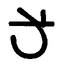
 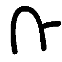
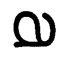
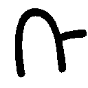
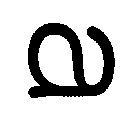
「いや、ギャル文字じゃないですか！」スーパーツッコミ大戦の声が弾ける。「つか、読みにく！」
しかし銀八には理があるようで、
「読みにくいからこそ、相手は頑張って読もうとする。その結果、書き手であるお前らと審査員の間に絆が生まれるんだ。――ちなみに女子の場合はギャル文字で感想文書いて、最後に写りのいいプリクラ貼っとくと入賞間違いなしだな」
「いや、完全におっさんの審査員限定ですよね、その作戦」
「プリクラ一枚で賞もらえりゃ、めっけもんじゃねーか」
「けどよ、先生」と頰杖をついて言うのは長谷川だ。「そのやり方、女子しか使えないじゃないすか。男はどーすりゃいいんすか？」
「心配すんな」言って、銀八はにやり。「こいつはあくまで作戦の一つだ。男女問わず使える作戦を今から伝授してやる」
銀八はギャル文字のパネルを外し、言葉を継ぐ。
「審査員のハートを摑むためには、文章そのものじゃなく、その文章のまわりに細工を施すってのも一つの方法だ。つまり、この『私は感動しました。』という素っ気ない文章を、こんな感じに飾るのもアリだな」
銀八は新たなパネルを黒板に貼りつけた。
―――― 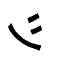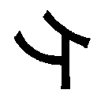―― !!
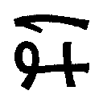 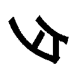―― ―――― !! 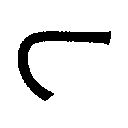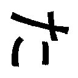
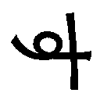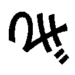!! ←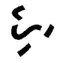 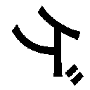―――――!
――  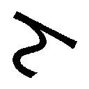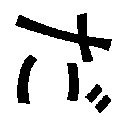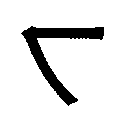 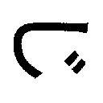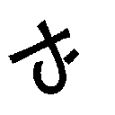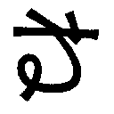? 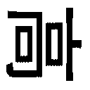!!
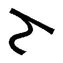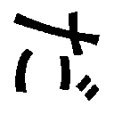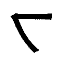 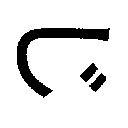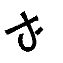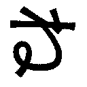? 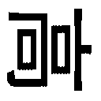!!
「いや、弾幕じゃないですか！」新八のつっこみもクレッシェンドでデカくなる。「動画投稿サイトじゃないですか！ 輪をかけて読みにく！」
「ネット上の技も使っていかねーとな。ま、こんぐらい騒ぎゃあ、審査員にもこっちの感動のレベルが伝わるだろ」
「いや、感動伝わる前に大顰蹙ですよ！ こんなんじゃ絶対落とされますって」
「バッカ。そこがおめーらの手ぬるいとこなんだよ。いいか？ なにごともフルスイングが大事なんだ。おめーらの感想文はふざけてたけど、まだまだ中途半端すぎんだよ。やりきっちまえばこっちの勝ちなんだ」
「先生の言う通りだな」とここで銀八に賛同したのが桂だった。「読書感想文というものは、やりきった方が勝ちだ」
「つーか、銀河の人は黙っててくんねーかな」銀八はしかし冷淡に言う。「おめーが賛同してくれても、ちっとも嬉しくねーから」
「桂を黙らせる、14へ」
「や、ほんとシャラップで頼むわ。殺したくなってくるから」
桂の口を封じてから、銀八はさらに続けた。
「ギャル文字、弾幕がお気に召さねーなら、こういうとっておきの方法もあるぞ」
言って、銀八が教卓の中から取り出したのは、一枚の原稿用紙だった。二つ折りにされていて、一見しただけではごく普通の原稿用紙にしか見えないが......。
「なんですか、それ？」新八がきくと、
「最高のインパクトを与える方法よ。こいつはな、パッと見にはなんの変哲もない原稿用紙だが......開くとこうなる」
そう言うと、銀八は二つに折った原稿用紙を開いてみせた。
と、そのど真ん中にペーパークラフトの洋館が立ち上がる。
「名づけて、飛び出す読書感想文！」
「いやもう、わかりません！ 皆目！」新八は頭を抱える。「てかもう感想でもねーし、文でもねーよ！」
「バカ、なんでこのセンスがわかんねーんだよ。もはや読書感想文は文字だけの時代に別れを告げたんだよ」
「いや、いい感じに言わないでください！ てかアンタのセンス、銀河の人と仲良くなれんじゃね？」
「ゲームブックと一緒にすんじゃねーよ。俺のは深い意図があんだよ。例えばおめー、飛び出す絵本を読んで、その感想を、飛び出す読書感想文に仕立てたら、コンクールの審査員の目も飛び出すんじゃね？」
「いや、くだらねーよ！ 教師と生徒という立場の違いを超えて殴りてーよ！」
新八のそのつっこみをきっかけに、他の生徒たちからも不満の声が噴出し始める。
そうだそうだ！ 先生ふざけすぎだぜ！ なにが書き方講座だコルァ！ こんなんで入賞できっかよ！ 今日ノコトハ主人ニハ内緒ニシトイテクダサイ！
ブーイングの嵐の中、しかし銀八の表情は変わらない。どころか、ヤンキーのような首の曲げっぷりで生徒にメンチを切る。
「んだよ、てめーら。人が親切にレクチャーしてやってんのによ」
「レクチャーって、どれも役立ち度ゼロじゃないですか」
「文句だけはいっちょまえに言いやがって」銀八は新しい煙草をくわえると、言った。「いいか、こっちも一応教えるこた教えたんだ。月曜までに全員読書感想文、再提出しろよ」
まさに横暴、まさに勝手気まま、であった。銀八の書き方指南は。
だが、新八をはじめ３Ｚの生徒たちも、本気で銀八に有益なアドバイスを期待していたかというと、実はそうでもなかったりする。
なにせ相手は銀八なのだ。シメるときゃシメるが、シメないときはほんとグダグダな男なのだ。真面目に書き方指南なんぞ始めた日には、逆に心配してしまうかもしれない。
というわけで月曜日の朝のホームルーム。
新八たちは、書き直した読書感想文を銀八に提出した。
二日で書き直せという命令は、明らかに無茶ブリだったが、書かなきゃ書かないでどんなペナルティーを課せられるかわかったもんじゃない。
「よーし、ご苦労だったな」全員分の読書感想文を集めた銀八が言った。「けど、おめーらが一発でちゃんとしたモン書いてくれてりゃ、書き直しなんてやんなくてよかったんだぞ」
「あの、先生」ふと気になったことがあったので、新八はきいてみた。「まさか、この感想文にもダメ出しして、書き直しなんてことはないですよね？」
締め切りは確か今日までだと聞いている。だが、銀八のことだ、昼休みを使ってでも書き直せ、ぐらいのことは言い出しかねない。
すると銀八、答えて曰く。
「ま、ほんとはそこまでしてーとこだけどよ、さすがに無理だ。午前中には校長んとこに届けなきゃいけねーしな。それに今日、ジャンプ出る日だし、俺そっち読まねーと」
だそうである。生徒の読書感想文よりジャンプとは、これいかにも銀八らしい発言ではある。が、なんにせよ、これで終わりなのだ。読書感想文漬けの日々は。
銀八が全員の感想文を重ねて、言った。
「よーし、じゃ男子の日直。この感想文、校長室に届けといてくれ。あ、それから――」と教卓の中に手を入れ、別の原稿用紙の束を取り出す。「これ、書き直す前の感想文だけどよ、こっちは職員室の俺の机んとこに置いといてくれ。つーか、今日の日直誰だ？」
「あ、俺です。日直」
立ち上がったのは――山崎退であった。
＊
山崎という男を説明するのに、さほど多くの言葉はいらない。
まず、やたらとミントンをする。
カバディもする。
そしてもう一つ。彼のキャラクターを構成する重要なファクターとして、不運、というのがある。
運が悪い。ヒキが悪いのだ、この男は。
本編でも何度かその片鱗は見せている。志村邸に忍びこんだときは、トラップで死にかけるし、身分を隠して攘夷浪士の会合に潜入したときも、結局は真選組であることがバレてしまった。
今回にしてもそうである。彼が銀八に命じられたことは、３Ｚが新たに書いた読書感想文を校長室に届け、ダメ出しされた最初の感想文は銀八の机に置いておくこと。たったこれだけである。
至極簡単なミッション。
なのに、この男は見舞われてしまうのである。不運に――。
３Ｚの教室を出、山崎は一階の渡り廊下を校長室に向かって歩いていた。
そのとき強風が吹いた。突風である。
左右に壁のない渡り廊下で、山崎はモロに強風を受け、よろけ、その手から原稿用紙の束が離れた。束は二つ。書き直す前の感想文と、書き直された感想文、それぞれがダブルクリップで留められている。クラス全員分の原稿用紙の束なのだから、それなりに持ち重りがする。本来なら、すぐに落下するはずだ。
が、ここでアンラッキー山崎が、持ち前の力を発揮するのである。
それなりの重さのある原稿用紙の束が、なぜか二つとも風に乗り、あれよあれよと言う間にグラウンドの方へ舞っていったのである。
「ちょ、やべ！」
山崎は原稿用紙を追うが、なかなか下に落ちてこない。それどころか、どんどんグラウンドの片隅の方へ向かい、あろうことか二束とも焼却炉の中に落ちてしまった。
「おいおいおい、あんのかよこんなこと！」
山崎は涙目で焼却炉に駆け寄り、炉の中を覗いた。
火は入っていた。そして、３Ｚの読書感想文はメラメラと燃え始めている。オレンジ色の炎に包まれた原稿用紙が、見る間に黒い焦げ跡に侵されていく。
「うぞっ！」
山崎は蒼ざめ、足元にあった火かき棒を炉の中に突っ込んだ。先端がＬ字になったそれで、なんとか原稿用紙を炉の外にかき出す。
救出された二つの束は――いや、もはやこれは救出とは呼べない。手遅れだった。
原稿用紙は一応形を留めているが、至る所に焦げ跡がつき、とてもじゃないが読めやしない。
マズい......。
マズすぎる......。
てか、なんで俺がこんな目に......。
最悪だ......。
だがしかし、これは現実なのだ。３Ｚの読書感想文は燃えてしまったのだ。
山崎は歯を食いしばった。考えろ俺。なんとかしろ俺。このあとどーするのがベストなんだ......？
教室に戻って、みんなに謝る。......だめだ、そんな勇気はない。
しかし、黙っておけるわけもない。校長室に感想文が届けられなければ、校長から銀八に催促が入るだろう。「感想文待ってんだけど、いつ来んの？」みたいに。
てことは、校長室にはなんとしてでも感想文を届けなきゃいかんということだ。
......待てよ。
山崎の目にキラリと光が走る。
......今から感想文をソッコーで書くというのはどうだろうか。
勿論クラス全員の分を書くのは無理だから、せめて一人分でも。それを封筒かなんかに入れて校長室に持っていく。校長が中身をあらためたらアウトだが、そこは賭けだ。校長のチェックはない、としよう。
いけるか、と思いかけたが、すぐに、いや、だめだ、と思い直す。
一人分とはいえ、アドリブで読書感想文をでっちあげるのは至難の業だ。
だからと言って、自分が書いたやつを思い出しながら書くのも無理だ。内容はすでに忘却の彼方だし、ゆっくり時間をかけて思い出すなんてことをしていたら、教室で待つクラスメイトたちが不審に思うだろう。「あいつ戻ってくんの遅くね？」と。
短時間で感想文をでっち上げる方法......やはり、ないか。
山崎は唇を嚙んだ。諦めてみんなに謝るしかないか、そう思いかけた瞬間だった。
天啓を得た。
黒く焦げた原稿用紙の束。しかし、全てが焼失したわけではない。ところどころ読める箇所はある。しかも、よく見ると、ダメ出しされた感想文の方は比較的ダメージが少ない。
山崎は決心を固めると、焦げた原稿用紙を上着の下に隠し、走り出した。
購買部へと――。
＊
数週間後のロングホームルーム、３Ｚの教室に近藤の笑い声が響いていた。
「いやー、はっはっは！ まさかこの俺が賞に入るとは思いませんでしたよ！」
賞とは、かぶき町青少年読書感想文コンクールの賞のこと。
規模の小さいコンクールだったため、審査結果はすでに出ていた。
そしてなんと、近藤勲の読書感想文がコンクールの努力賞に選ばれたのである。
最優秀賞、優秀賞、奨励賞、審査員特別賞ときて、その下の賞だったが、それでも入賞には違いない。
「これぞミラクルだな」銀八もくわえ煙草でにやついている。「――ま、しかし、ゴリラさまさまだぜ。これで俺の臨時ボーナス交渉作戦も実行に移せるってもんだ」
「いやいや、俺もお役に立てて光栄っすよ！」
賞と名のつくものは、小学校四年のときにもらった『歯が丈夫で賞』以来だ、と近藤は大口を開けて笑う。
よかったですね近藤さん、やるじゃねーか委員長、その幸せな思い出とともに死んでくれないかしら近藤さん、と周囲からも祝福の声が上がる中、
――つーか、俺が一番驚いてるんですけどォォ！
と心の中でシャウトする男がいた。
山崎である。
――なんでこんなことが起きるんだ......？
山崎は数週間前のことを思い返してみた。
あの日、風のいたずらでみんなの感想文が焼却炉に落ちたあの日、山崎はなんとかして事態を隠蔽しようとした。
購買部で新しい原稿用紙を買い、それに大急ぎで読書感想文を書く。でもって、それを校長室に届ける。そうするしかないと思い、事実山崎はそうした。
書き直す前の感想文は俺の机に、と銀八からは言われていたが、それに関しては少々乱暴な解決策をとることにした。まさか焼け焦げた感想文を置いていくわけにはいかない。だから、置かない、と山崎は決めたのである。
銀八の机が常に散らかっていることは校内でも有名だった。
「え、感想文が置いてない？ でも僕はちゃんと置きましたよ」
そう言って、あとは口を拭ってしまえば、なんとか隠し通せると思ったのだ。
しかし、問題は急ごしらえででっち上げる感想文の方である。
急ごしらえといっても、全くのアドリブで感想文を書くのは無理だ。
そこで山崎がとった方法は、燃えた感想文の中から判読できる部分を拾い、それを繋ぎ合わせて一つの読書感想文を作るというものだった。
なにせ時間がなかった。完成度もクソもない、とにかく体裁だけでも整えておく必要があった。
作業は勢い雑になった。焦げ跡だらけの原稿用紙から読める部分を探し出し、とりあえず新しい原稿用紙に書きつける。文の繋がりや、意味が通じているかどうかなどはチェックしている暇がない。Ａの感想文から一部分書き写し、Ｂの感想文からさらに一部分、次はＣ、またＡに戻って探し、今度はＤ......というような。とにかく支離滅裂な作業だった。
男子トイレの個室の中、大慌てで完成させた読書感想文は、読み返されることもなく封筒に入れられ、校長室に届けられた。
封筒に入れた感想文をハタ校長に渡したときは、心臓が止まりそうだった。一応白紙の原稿用紙も一緒に入れ、重さだけは誤魔化したが、中をあらためられて、
「なんで一人分？」
と言われたらどうしようかと思ったのだ。
が、それはなかった。校長は受け取った封筒をすぐにデスクの引き出しにしまい、こう言った。
「ご苦労じゃったな。すぐに応募の手配をしておくと坂田君に伝えておいてくれ」
校長室を出てから、山崎はようやく小さじ一杯分安堵した。
入賞するかしないかは天のみぞ知るというやつだ。というかぶっちゃけ、入賞なんかするはずがないのだ。十分足らずででっち上げた感想文なのだから。なんの思惑もなく、ランダムにパーツを繋ぎ合わせただけの感想文なのだから。
それよりも、焼却炉に感想文を落とした一件を闇に葬れたことの方が大きかった。
それなのに......。
「けどよ、近藤」と銀八の声がした。「この感想文、ほんとにおめーが書いたのか？ 母ちゃんか誰かに頼んだんじゃねーだろうな」
「そんなことしてませんよ」近藤は即座に否定する。「けどま、二日で仕上げなきゃいかんっつーことで、俺も必死でしたからね。今読み返してみても、こんな文章書いたっけって感じなんすけど」
今、全員の手元には、『かぶき町だより』という小さなコミュニティ新聞がある。そこに今回の読書感想文コンクールで入賞した作品が全文掲載されている。
当然努力賞をとった近藤の感想文も、扱いは小さいが全て掲載されていた。
こんな感じで。
【努力賞】
『ぱしれメロヌ』を読んで
３年Ｚ組 近藤勲
メロヌは勇敢で判断力に富んだ戦士でした。親友のために、くじけることなく何十キロもの道のりを走り続けるのです。
僕はこの本を読んで、誰かのために強く生きることが、どれだけ素晴らしいことか、深く考えさせられました。
メロヌは親友のために走ります。胸の中にある感情は一つだけ。
友情。それ以外のものはありません。
印象的なシーンはたくさんありましたが、僕が一番興味深く読んだのは、村長がこう言ったところです。
「君はいくじなしだ。冒険を続けていく資格はない」
メロヌは立ち止まってしまいます。心ない言葉に悩みます。
けれど、思います。願いはきっとかなうはず。だから立ち上がるんだ。
心のすき間に入りこんでくる誘惑や、血みどろの死闘をくぐり抜け、ようやく目指す場所に辿り着いたメロヌに親友は感動します。そして喉をふるわせて号泣し、傷だらけの勇者の手を強く握ります。決してほどけないようにかたく。
なんという美しさでしょう。
読書とは人生の調味料です。知識がつくだけでなく、高いところがよく見えるようになります。言ってみればそれは、これまで見たこともない世界なのです。
僕はこの本をいろんな人に薦めたいと思いました。
「うーん......」山崎は小さな声で唸った。「ミラクル」
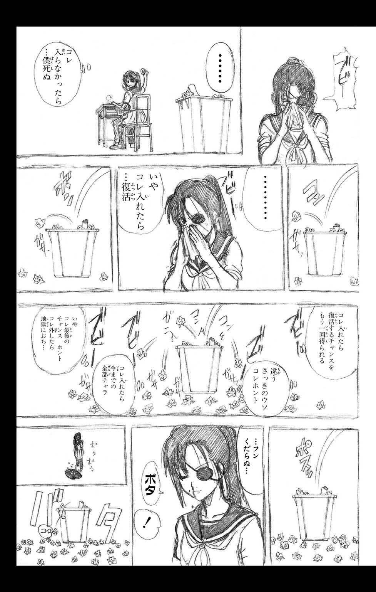
オマケショート劇場 ３Ｚの昼休み・その３
お昼の校内放送が始まった。放送部の制作した番組が、教室の天井から吊り下げられたテレビに流れるのである。
学校行事の案内や部活動の紹介などのコーナー、そういうものの中に、一つ名物コーナーがあった。
メルヘンチックなオープニング音楽が流れ、花野アナのナレーションとともに映像が始まる。
『あるひのわんこ』
『かぶき町の銀魂高校で、白くて大きなわんこに出会いました。
定春です。
定春はいちご牛乳がだ～い好き。しかも体が大きいので、た～くさん飲めちゃいます。
大好きないちご牛乳を飲んだあとは、お散歩に出かけます。
体の大きな定春は、学校全部がお庭なのです。
体育館の裏は、お気に入りのお散歩コース。
クンクン、クンクン。草の匂い、土の匂い、エロ本の匂い。定春は好奇心いっぱいです。
校舎の中にだって平気で入っちゃいます。
おや、向こうから誰か歩いてきますよ。
お登勢理事長です。煙管を持ったお登勢理事長は、会うと必ず、定春の頭をポンとさわります。
「今日もいい天気だねェ」
おやおや、今度は長谷川さんが歩いてきますよ。
「ペットシッターのバイトとかあんのかな」
お散歩の途中で出会う長谷川さんは、いつも思いつめたような顔をしています。でも、定春は知ったこっちゃありません。
トコトコ歩いていると、今度はハタ校長と教頭に出会いました。
「前から気になってたんですけど、学校ん中を犬がうろついてるのって、どうなんですかね。しかもこんなデカい犬が」
「よいではないか。余は動物には寛容じゃぞ。それに見ろ、デカいといっても愛くるしい顔をしておる。おー、よしよし」
校長先生は動物好きなのです。
頭をなでられた定春は、牙をむき出しにして、低い唸り声で答えてあげます。
「......なんか、すげー睨まれてんだけど」
「動物はピュアですからね。心が汚い奴は拒絶されるんじゃないですか」
「眼鏡叩き壊してやろーか？ ん？」
学校の中のお散歩もいいけれど、ひろ～い校庭を走るのも大好きです。
お昼休みの校庭を思いっきり走っていると、中には悲鳴を上げて逃げ出す子もいます。
「おーい、定春ゥゥ！」
おや、この声は？
教室の窓から手を振っているのは、神楽ちゃんです。
「定春、食後の運動するネ！」
定春は校庭をつっ切って、猛スピードで神楽ちゃんに駆け寄ります。
神楽ちゃんに向かって、ジャーンプ。
バリーン！ ガッシャーン！
窓ガラスが跡形もなく粉砕されました。
でも、定春は強い子。ケガなんかしません。
一週間に一度は、必ずこうやってなにかを破壊する、元気いっぱいの定春なのでした。』
教室の隅で、ぼけっと校内放送を眺めていた銀八は、ガムテープと新聞紙とベニヤ板で応急処置が施された窓をちらりと見て、一言呟いた。
「元気いっぱいすぎじゃね？」
溜め息をつき、手元のジャンプに視線を戻す銀八なのでした。
補講
人に相談する時って、たいがい
相談する前に自分の中でもう答えが出てる
人はおのれの欠点に感謝し、才能を恐れなければならない。（エマーソン）
さすがエマーソンさん、いいことおっしゃるわ。すいませーん、エマーソンさんにドンペルーニョ三本お願いしまーす。あ、やっぱり五本で。（志村妙）
いや、姉上！ 一応高三設定ですから！（志村新八）
銀魂をこれからもヨロシクね。いやホントに。（坂田銀八）
＊
ここまでやる必要があるかね、と坂田銀八は思うのだった。
生徒相談室、という名前がつけられた部屋に、銀八はいた。キャスターつきの椅子にだらしなく腰かけ、机に頰杖をつき、くわえ煙草。その視線の先にあるのは、出入り口のドアを遮るようにして立てられた、衝立である。上半分がすりガラスになった衝立の向こう側には、パイプ椅子が一脚置かれ、ボイスチェンジャーを介した小型マイクも準備されている。相談に来た生徒のプライバシーを保護するため、というのがハタ校長の説明だったが、正直なところ銀八には、大げさに過ぎるお膳立てにしか思えなかった。
担任たるもの、自分のクラスの生徒がどんな悩みを抱えているか、しっかり把握しておくべきである、というわけで今日の放課後、緊急個人面談をファッキン実施しろ――ハタ校長にそう命じられたのが、今日の昼休み。で、今がその放課後であった。
ちなみに、「ファッキン実施しろ」とハタが言ったあと、教頭が、「まーぶっちゃけ、生徒のためっつーより、単行本の書き下ろしのための企画だけどな」と例によって本音を呟き、「ぶっちゃけんじゃねーよ、くそジジー！ そこぶっちゃけたら『ハタ校長って、本当は生徒思いの立派な教育者なんですね』ってみんなに思われたい余の思惑がパアになるじゃろーが！ つーかこの発言でもうパアじゃろーが！」とハタがキレる一幕があったわけだが、そんなやりとりはともかく、である。
個人面談。銀八にしてみれば、イマイチ乗り気になれない仕事であった。あの激烈おバカさんたちのために自分が残業を強いられる、というのが納得いかないし、まずもって３Ｚの連中に悩みや相談事があるのか、という点が大いに疑問だった。相談は希望者のみ、とすでに帰りのホームルームで伝えてある。来るも来ないも生徒の自由。
「ひょっとしてこのまま待ちぼうけってこともあんじゃねーか？」
相談室で教え子を待つ銀八、そう呟いて煙草を灰皿で消したときだった。
最初の訪問者が相談室のドアをノックした。控えめなノックに、銀八が「おー、入れー」と返すと、ドアが開き、衝立のすりガラスの向こうで人影が動いた。男子生徒である、という程度の判別はつくが、無論顔はわからない。生徒はパイプ椅子に腰をおろし、ややあってボイスチェンジャーで加工された声が言った。
「......あの、名前は言わなくてもいいんですよね？」
「おー、名乗りてえなら別だが、匿名希望ってんなら伏せとけ」
銀八の言葉に生徒はいくぶんホッとした気配を見せ、続けた。
「じゃ、あの、早速相談なんですけど......僕、一つ悩んでいることがあるんです。それは、つまりその、僕......」
悩みというからにはやはり言いづらい事柄なのだろう。生徒が言葉を選ぶ間に、銀八は新しい煙草に火をつけ、待った。やがて生徒が意を決したように続けた。
「先生、ぼ、僕もたまにはボケたいです！」
「うん、お前新八だろ」銀八はあっさりと言い当てる。「まあ、入ってきたときの雰囲気で大体察しはついてたけどよ」
「な、なに言ってるんですか。僕は新八じゃないですよ」
「相談の中身が新八以外にありえねーだろ」
「き、決めつけないでください。顔も見えないし、こ、声だって変わってるのに」
頑なに否定する相手に、銀八はさらりとこう告げる。
「ところでさ、お通ちゃんって、よく見るとブスだよな」
「だとコルァァァァ！」
「はい、新八な」
衝立の向こうで勢いよく立ち上がった新八に、銀八は投げやりに言うと、本題に戻った。
「で？ なに？ たまには僕もボケたいですってか？」
「ま、まあ、そういうことです」相談者――新八は気まずげに咳払いし、座り直した。
「ボケたいですって、お前だってたまーにボケてんじゃねーか。ま、ハレー彗星ぐらいの頻度だけどよ」
「いや、どんだけレアなんですか僕のボケは！ てか、ハレー彗星って何十年に一回の頻度でしょ！」
「ほら、それだよ」銀八は言って、衝立越しに新八を指さす。「お前には、その立て板に水のツッコミがあるんだからよ、別に今更ボケなくたっていいじゃねーか。適材適所っつー言葉もあんだしよ」
この一言でもって、ハイ面談終了、と銀八としてはいきたいところだった。が、新八は、「それは、わかりますけど、でも......」と粘る。
悩む地味眼鏡に、銀八は仕方なくもう少し言葉を費やしてやる。
「それによ、さっき、『だとコルァァァァ！』つってお前が立ち上がったところ。あれだってある意味ボケだろ。て考えたらよ、お前、寺門通がらみのときは、そこそこボケてんじゃねーか。それで満足しろよ」
「まあ、そう分析されたらそうなんでしょうけど......」新八は考えながら言葉を継ぐ。「でも、なんていうか、僕もたまにはお通ちゃんに関係してないところでボケたいっていうか、先生みたくサラっとボケたいというか......」
「まあ、言いてえことはわかるけどよ」
困ったねどーも、という感じに銀八は溜め息をついた。
と、不意に新八が口調を改めた。
「わかりました。じゃあこうさせてください」
片眉を上げた銀八に、新八が続ける。
「今日は僕に先生の役をさせてください」
「はあ？ 俺の役？」
「そうです」きっぱりと新八が頷くのが見えた。「さっきのハレー彗星のボケ、あれを僕が言いますから、先生はそれにつっこんでください」
「や、あのな......」銀八は露骨にだるそうな声を出す。「なんで俺がそんなめんどくせーことやんなきゃいけねーんだよ。そんなめんどくせーことするぐれえだったら、音楽室の壁の穴が何個あるか数えてる方がマシだぜ」
「いや、明らかにそっちの方がめんどくさいでしょ！ てか、それ！ そういうボケですよ！」
つまりですね、と新八は語気を強める。
「つまり、僕も味わってみたいんですよ、そうやってサラっとボケるのがどんな感覚なのか」
「味わいたいって、お前......」
「少しくらいいいじゃないですか。僕はね、先生。朝のホームルームでつっこみ、授業中もつっこみ、トイレ休憩でもつっこみ、昼休みも掃除の時間も帰りのホームルームもつっこみ......チャイムとチャイムの間はほぼ間違いなくつっこんでるんですよ？ そんな学校生活ってありますか？」
「や、そんな被害者みたく言われてもよ......」
銀八は舌打ちし、かぶりを振った。一発目から面倒な相談、というか、これはもうリクエストだ。しかしまあ、ここはゴネるよりチャッチャッと終わらせちまおう、というわけで、
「わーったよ。じゃ、ちょっとだけだぞ」
「ありがとうございます！ じゃあ、早速いきますよ」
新八は弾んだ声で礼を言うと、咳払いして、少し間をとった。そしてさっきの銀八の言葉を口にする。
「......お、お前だってたまーにボケてんじゃねーか。ま、ハレー彗星ぐらいの頻度だけどよ」
銀八の口調を真似つつも、どこかに照れがある。が、なんにせよ、ボイスチェンジャーを介した声なので、似ているもクソもない。
銀八はくわえ煙草で返した。
「なんでやねん。これでいいか？」
「いや、やっつけすぎでしょ！ アンタどんだけめんどくさがり屋さん？ ってコレ、結局僕がつっこんでるし！」
「はい、終了～。次の生徒さん、どーぞ」
「いや、終わりですか！ ちょっと！ 僕の相談タイム、もう終わり？」
「おめー一人ばっかに時間割いてらんねーんだよ。もういいからダメガネは退室しろ」
「ひどい。ひどいですよ、先生......」新八はかぶりを振ると、銀八に指を突きつけた。「先生、いいでしょう。今日はこれで失礼します。でもね、僕は......僕はこの仕打ちを、あと五分は忘れませんからね！」
灰皿に煙草を押しつけてから、銀八は口を開いた。
「あ、ゴメン。今、ボケた？」
「きいてねーし！ 僕のサラっとしたボケ、きいてねーし！ ああそうですか！ わかりましたよ！ じゃあ自分でつっこみますよ！ いや五分で忘れるんかーい！」
ありがとうございました！ と叩きつけるように言い、新八は相談室を飛び出していった。
バタンとドアが閉まったあと、銀八は首の骨を鳴らしながら独りごちた。
「......ま、青春にゃ試練がつきものってことで」
まとまったんだか、まとまってないんだか、よくわからない一言ではある。
次の相談者は、それからいくらも経たないうちに現れた。新八のときよりは力強いノック。銀八が「おー」と返すと、衝立の向こうでドアが開いた。
パイプ椅子に腰かけたのは女子生徒だった。ボイスチェンジャーを介した声が言う。
「先生に折り入って相談があって来ました！ 匿名希望でお願いするアル！」
「はい、神楽ね......」銀八は白髪頭をかいて溜め息をつく。「てかコレ、衝立とボイスチェンジャー、いらねんじゃね？」
「先生！ 相談に入ってもいいアルか？」
「へーへー、どんぞ」
銀八がだるそうに促すと、神楽は話し始めた。
「先生、私、どーしても巨乳になりたいアル！」
「巨乳だあ？」
「そーアル！ あの納豆眼鏡女みたいなオッパイになりたいアル！ 体操服で走ったとき、ユッサユッサ揺れてるのが見えるくらいのオッパイがいいネ！ そうなったら私は学園のマドンナアル。というわけで、どうすれば私は巨乳になれますか！」
「どうすればってお前......」またくだらねー相談を、と思いつつも、銀八は一応のアドバイスを告げる。「ま、アレじゃねーか。毎日牛乳飲んでよ、そんで寝る前にバストアップ体操でもすりゃいんじゃね？」
「牛乳飲んでバストアップ体操すれば、明日には巨乳になってるアルか？」
「そんな即効性ねーよ。地道にやれよ、地道に」
「先生、私はもっと効果の早い方法が知りたいアル！ 一日も早く学園のマドンナになって、胸の谷間に一万円札を挟んでもらいたいネ！」
「いや、学園のマドンナ、そんなことしねーだろ」銀八はつっこんだあと、なげやりに次の案を出す。「だったらもうアレだ、なんちゃらクリニックとか行けよ。豊胸手術？ あーゆーとこなら手っ取り早いだろ」
「先生、私にはそういうとこに行くお金はありません！」
「じゃーもう俺にはわかんねーよ。つーか、そう簡単に乳デカくできる方法なんてねーだろ」
さじを投げた銀八に、しかし神楽は意味深に笑いかけた。
「フフフ......。ところが先生、それがそうでもねーんでがすよ。私は一つとっておきの方法を発見したアル」
「あんのかよ、そんな方法。てか、そんな方法知ってるなら、ここ来る必要なかったんじゃね？」
「私の発見した方法は、まだ効果があるかどうかの確証がないアル。だから今日はここで、その方法を試してみたいネ」
「試したいって、お前......」訝しげに目を細める銀八に、神楽が説明を始めた。
「先生、こういう話をきいたことはないアルか？ 『女性の脚は視線で細くなる』」
「あー」と銀八は無感動な声。「なんかできいたことあるな。アレだろ、要は男に見られることによって、女の脚が綺麗になっていくっつー話だろ？」
「イエス。そして私はその理論は女の乳にも応用できると踏んだアル」
「応用？」
「女の乳も男に見られることによってデカくなる！ はず！」
「いや、お前な......」呆れつつも、諭すように銀八は言った。「視線でどうこうなるっつーのは、ありゃ女の側の意識の問題だろ？ ま、実際細くなったりデカくなったりするかもしれねーけどよ、それこそ牛乳と一緒で即効性なんかねーよ」
「というわけで、今から先生にナマ乳見せるんで、よーく見といてほしいアル！」
「いや、俺の話きいてた？ 見せたところで、すぐに効果は――」
言い募る銀八だったが、衝立の向こうでは、もう服を脱ぎ始めている動きが見える。
「わ、ちょ、待てって！ マジか？ おまっ、マジで見せる気か？」
「心の準備はいいアルか？ 今から衝立の前に出るヨ！」
「いや、よくないよくない！ おめーのナマ乳なんて、そら一部のマニアは喜ぶかもしんねーけど――」
椅子の上で慌てふためく銀八に、神楽の声。
「さあ、どうぞアル！」
人影が動き、銀八は反射的に目を閉じた。そこへきこえた声。
「ホラ、シッカリ見テクダサイ」
キャサリンだった。トップレスで衝立の前に立っている。
「いや、おめーかよ！ てゆーか、うっすら予想はしてたけどなァ！」
「ア、気ノセイカシラ？ 先生ノ視線デ私ノ乳房ガ大キクナッテイク......」
「気のせいだよ！ 大体おめー、どっから湧いて出た！ しかもなんだか知らねーけど小説版で脱ぎ癖つけやがって！ さっさとそのおぞましいモン隠せ！」
銀八はキャサリンに命じ、衝立の向こうの神楽にも言う。
「てか、グラ！ おめーはなんだ、自分の乳じゃなくて、この女の乳をデカくしてーのか？」
「とりあえずその猫耳女で実験してみたアル」
「とりあえずじゃねーよ。やるならもっと実験サンプル吟味しろ、バカ」
「じゃ、次はお登勢理事長で」
「このマッドサイエンティスト！」つっこんだあと、銀八はまとめるように言った。「つーかもう即効性のある方法なんか期待すんな。そんな都合のいい方法なんかねーんだからよ、地道に、最初に俺が言った方法試せよ」
「わかったアル！ とりあえず今日から毎日牛タン食べて、寝る前にアルゴリズム体操してみるネ！」
「うんまあ、別に止めねーよ。それで失うモンもねえだろーし」
勝手に納得し、相談室を出ていった神楽。だが、キャサリンはその場に残った。もう服は着ているが、帰らずに衝立の横に立ったままだ。
「なんだ？ おめーもなんか相談事あんのか？」
「キイテクレマスカ？」
と言われ、銀八は仕方なく頷く。
「わーったよ。言ってみろ」
キャサリンは「アリガトウゴザイマス」と頭を下げ、衝立の裏に回った。
「エート、匿名希望デオ願イシマス」
「その資格ねーだろ、もはや。つーか今後は匿乳希望でお願いしたい。――で、相談ってのは？」
促すと、ボイスチェンジャーを通したキャサリンの声が流れ出した。
「私ノ相談トイウノハ、他デモアリマセン。コノ台詞ノカタカナ表記デス。片言デアルコトヲ表現シタイトイウ作リ手ノ意図ハワカリマスガ、イイ加減ヤメテホシインデス。第一カタカナダト、長イ台詞ヲ話ストキ不便ナンデス。読者モ読ンデクレナイシ。私ニトッテ、コノカタカナ表記ガズット続クコトハ、アル意味デ十字架ヲ背負イ続ケルコトナンデス。私モソロソロ流暢ニ喋レルヨウニナッテモイイト思ウンデス。ダカラドウカ、ソロソロヒラガナニシテ、アリオリハベリ」
「いやもう、うぜーよ！ おめーの長文読みづれーんだよ！」忍耐が切れ、銀八は怒鳴る。「てか、お前ひょっとしてわざとやってんじゃねーだろうな？」
「ワザトデス」
「わざとかよ！ じゃ、帰れよ！」
「ワカリマシタ。帰リマス。♪ホータールノ、ヒーカァリー」
「うざっ！ その帰り方、マジうざっ！」
辺り一面にウザさを撒き散らし、キャサリンが去ったあと、次なる相談者がドアをノックした。これまでで一番力強いノック。煙草に火をつけ、銀八が疲れ気味に「おー」と答えると、男子生徒が入ってきた。椅子に腰をおろし、生徒が告げた。
「近藤勲です！ 匿名志望でお願いします！」
「開口一番名乗ってるけどな。しかも匿名を志望しちゃったんだ、希望じゃなくて」
「先生！ 俺の悩みをきいてください！」
「高い所にあるバナナは踏み台を使えば取れるぞ」
「先生、今日はバナナを取る方法についての相談じゃないんすよ！」
「『今日は』ってなんだよ。違う日だったらバナナの相談もありってことか？」
「俺の相談というのは、お妙さんのことです！ 一体どうすればお妙さんは俺に振り向いてくれるんでしょうか！」
グイグイとマイペースに話を進めていく近藤。しかしまあ、銀八もその方がありがたい。
「どうすればって......」銀八はぷかりと煙を吐く。「うしろに立って名前呼べば振り返ってくれるんじゃね？」
「先生、そういう話じゃないんすよ！ ていうか、俺の場合、それでも振り返ってもらえない可能性大です！」
「わかってんじゃねーか、自分でも」
「ちくしょう、どうすりゃお妙さんの心をゲットできるんだよ！」悔しそうに自分の膝を叩く近藤に、銀八はこのアドバイス。
「ま、一つ方法があるとすりゃアレだな、顔と声と名前変えるかだな。あと指紋も」
「先生、冗談言っちゃいけませんよ！ それだけ変えるには金も時間もかかりますよ！」
「そこつっこむんだ。お前自身の尊厳は？」
「先生、ぶっちゃけ言ってください！」近藤がガラスに顔をくっつけんばかりに身を乗り出してきた。「俺のどこがお妙さんにとってアウトなんでしょう？ なにをすればお妙さんは俺を受け入れてくれるんでしょう？ この俺の熱い気持ちを！」
近藤の叫び。暑苦しいが、志村妙への想いは本物だ。あまり無下にあしらうのもなんだと思い直し、銀八は咳払いして言った。
「まあ、お前の場合、『なにをすれば』っつーより、『なにをやめれば』って話だと思うけどな」
「やめる？」
「そう。ほら、お前ってよ、なにかにつけてポエム読むだろ。お妙さんラヴィンニューとかいう。ああいうウザいポエム読んだりするから、ただでさえウザいゴリラが輪をかけてウザくなっちまうんじゃねーか？」
「なるほど！」力強く頷いたあと、近藤はきっぱりと告げた。「わかりました！ 俺、ポエムやめます！ これからは俳句にします！」
「や、あのよ......」銀八はバリバリと頭をかきむしる。「そういうことじゃねーんだけどな、俺が言いてえのは」
だが、スイッチの入ったゴリラは止まらない。
「うん、俳句。俳句はいいかもしれないっすね！ なんていうか、和の心って感じで！」
「いや、その前に俺の心、察して」
「おっと！ 早速一つ出来ましたよ。では、ここで一本！」
「ここで一句な」
「お妙さん、ラヴィラヴィラヴィニュ、ラヴィンニュー。......どーすか、ちゃんと五・七・五でしょ！」
「いやそれ、五・七・五以前の問題だろ。中身ポエムと一緒じゃねーか」
「いやいや、この俳句はいいですよ。今までのポエムとは味わいが違います！」一人悦に入るゴリラは、なにが嬉しいのか、再び今のバカ俳句を繰り返す。「お妙さん、ラヴィラヴィラヴィニュ、ラヴィンニュー！ うむ、傑作！」
ドアが開いたのは、その直後だった。衝立の向こう、近藤の背後に一人の女子生徒の影が立った。その人物――というか、この場合、影だけでわかる――志村妙が言った。
「誰がビラビラですって？」
「や、お妙さん、ビラビラじゃなくて、ラヴィラヴィ......」
ゴリラの怯えた声に、妙の朗らかな声が重なる。
「あ、私も一句出来たわ」指の関節を鳴らしながら、妙はこう続けた。「ゴリラさん、お願いだから、消え去って」
妙のアイアンクローが近藤の頭蓋骨をメキメキと軋ませる音は、衝立越しにも十分伝わってきた。ボイスチェンジャーを通した悲鳴が途切れると、近藤の体はドサリと床にくずおれた。妙は近藤の襟首を摑み、そのままズルズルと引きずって部屋を出ていく。
「おーい、志村妙。おめーはなんか相談事ねーのか？」
尋ねた銀八に、妙は軽やかに答えた。
「私はいいです。しつこいストーカーゴリラに悩まされてましたけど、とりあえず解決しましたから」
俳句をひねるついでにゴリラもひねった志村妙は、悠々と相談室をあとにした。
「ま、当人同士で解決できるなら、それに越したこたねーわな」
うんうん、と一人で頷き、銀八は今の傷害事件を忘れることにした。
そこへまたノックの音。銀八が答え、ドアが開く。
新たな相談者は椅子にかけるなり、マイクを通していない声で名乗った。
「土方です」
「おー、マヨ方か。なんだ、別に匿名でもよかったんだぞ」
「別にコソコソするつもりはねーすよ。それに俺ぁ、今日は相談に来たんじゃないんすよ。苦情を言いに来たんだ」
「苦情？」
銀八は煙草を灰皿にねじりつけ、衝立の方に向き直った。
「先生、今日ははっきり言わせてもらいますよ。あんたの存在についてね」
「存在たあ、またややこしそうな話だな」
「ややこしくはないっすよ。簡単な話だ」間を置き、土方は低い声で続けた。「先生、あんたいつまで先生でいるつもりなんです？」
「どういうことだよ？」
「いいすか、先生。あんたが先生やってるときゃ、こっちは生徒なんだ。生徒として、一応はあんたを立てなきゃいけねーし、タメ口もきけねえ。俺としちゃ、イマイチそれが納得いかねーときもあるんすよ。『先生』っつう看板、そろそろ下ろしてもいいんじゃないすか」
なるほど、と銀八は頷く。土方の言わんとするところ、わからないでもない。
「要はこういうこったな。――万事屋銀さん相手ならつかわなくてもいい気を、３Ｚ担任の銀ぱっつぁんにはつかわなきゃいけねえ。おめーはそれがイラつく、てんだな？」
「まあ、そういうときもあるってことっすよ」
「じゃあよ、今度頼んどいてやるよ、あいつに」
「あいつ？ 誰すか？」
「ほら、なんつったっけ、銀魂描いてる奴。ソチラ？ あーソラチか。俺もあいつとは知らねえ仲じゃねーしよ、今度頼んどいてやるよ。土方十四郎が教師って設定のオマケマンガ描いてくれって。そうすりゃお前も晴れて先生様だ」
「いや、お、俺は別にそんなこと望んじゃいないっすよ......」
と言いつつも、土方の口調にはまんざらでもなさそうな色が見える。
「遠慮すんなって」銀八はへらりと笑う。「とりあえず、タイトルは『６年３組マヨ八先生』な」
「いや、俺は小学校っすか！」即座に土方がつっこむ。「あとマヨ八ってなんすか、マヨ八って！」
「おめーにピッタリの名前じゃねえか。子どもを叱るとき、頭からマヨネーズをぶっかけるマヨ八先生だよ」
「ＰＴＡで大問題っすよ、そんなことしたら！」
「あとはチョークの代わりにマヨネーズ。ワックスの代わりにマヨネーズ。休んだ子には連絡マヨネーズ」
「意味がわかんねーよ、連絡マヨネーズの。つーかよ、俺が小学校教師なのはいいとしても、あんたらが小学生ってのは無理があるでしょ」
「バッカ。俺はその小学校の理事長だよ」
「結局俺の上いってんじゃないすか！」
「ちなみに校長は沖田な」
「最悪すぎるわ、人事の配置が！」
もういいっすよ、小さく吐き捨て、土方は席を立った。
「クレームぶつけりゃ多少でも鬱憤晴れると思ったんすけどね......時間の無駄でしたよ」
言って、土方はドアに手をかけた。その背に銀八は言った。
「待てよ、そう怒んなって。マヨ八が嫌なら、マヨ七にしてもらうからよ」
「原型留めてねえじゃねーか！ なんのパロディーだかわかんねーよ！」
大きな音を立ててドアが閉まった。
そして、ひと息つく間もなく、次の相談者が現れる。ガチャリと開いた扉。ただし、その扉は相談室のドアではなく、銀八の左後方に据えられていたスチール製のロッカーの扉だった。掃除道具入れとして使われているロッカー。となると、当然現れるのは納豆眼鏡女――さっちゃん。
「先生、相談があって来ました」
「来ましたっつーか、潜んでましたって感じだけどな」
ロッカーからさっちゃんが現れること自体は、銀八ももう驚かない。冷静にコメントした銀八に対し、
「潜んでいたなんて、誤解です」さっちゃんはロッカーの中でかぶりを振る。「私は本当に今ここに着いたばかりなんですよ。３Ｚの掃除道具入れに入って、内部にある隠し扉から教室の天井裏に入って、そこからダクトの中や柱の中を通って、今このロッカーの中に到着したんです」
「うん、なんのミッション？ つーか、なに勝手に３Ｚとここのロッカー、結んじゃってくれてんの？」
「教師と生徒の逢瀬ですもの。やはり人目を忍ばないと」さっちゃんはそう言って、頰を染める。「それに、３Ｚとここだけじゃありません。私はこの学校の中なら、好きなロッカーから入って、好きなロッカーから出てくることができます」
「イリュージョンじゃねーか、もはや。誰の許可得て学校中のロッカー、ネットワーク化してくれてんだコラ」
「いずれは私の家のクローゼットと先生の家の押し入れも結ぶつもり――」
「で、相談ってのは？」
不法侵入女の言葉を遮り、銀八は強引に本題に入った。
ロッカーの中で、伏し目がちにさっちゃんは話し始める。
「はい、相談というのは......私の夢小説のことなんです。先生は、私がケータイで夢小説を書いていることはご存知ですよね？」
「知りたくなかったけどな」
「あの夢小説がある程度たまったので、今日はそれを先生にプレゼントしようかと」
「来たよ、今最も欲しくないアイテム堂々の第一位」
「プリントアウトしてきましたから、どうぞ」
と言って、さっちゃんが足元の鞄から取り出した紙の束は、厚みが広辞苑くらいあった。
「いや、どんだけ大長編書いてんだよ、夢小説で！」さすがに銀八の声もでかくなる。
「これでまだ第一部なんですよ。宇宙創成から語り起こしてますから」
「一大叙事詩じゃねーか。しかもお前、あまりの重さで腕震えてるしよ」
「い、いりませんか？」
「いらねーよ。つーか、その紙の束をお前の足にくくりつけて、校庭百周を命じたい」
「そんな、私の書いた小説を読まずに、しかもそのうえ、足にくくりつけて校庭百周だなんて、そんなの......最高じゃない！」
「ハイ、終了～」
顔を上気させるＭ女を視界から消すように、銀八はロッカーの扉を閉め、鎖と南京錠で厳重に封鎖した。
新しい煙草に火をつけ、銀八は、さて、と考える。
志村妙は除くにしても、これで六人の相談者をさばいたことになる。六人。十分な数だろう。渋々引き受けたやっつけ仕事なのだから、もうここらで店じまいしてもいい頃かもしれない。
「......けえるとするか、ぼちぼち」
銀八が椅子から腰を上げかけたときだ。ノックの音がした。
コンコンコン、コン、コンコン――まるでなにかの符牒のような叩き方だ。無論、銀八に意味はわからない。が、わからないからこそ、瞬間的に銀八は悟っていた。この謎のノック、主はあいつだ、と。
「......来やがったか、とうとう」
額に滲んだ汗を拭い、銀八は椅子に座り直した。
ドアが開き、「あいつ」が入ってきた。銀八はゴクリと唾を飲む。パイプ椅子にするりと腰かけると、その男子生徒はボイスチェンジャーを通した声で告げた。
「桂小太郎です！ 六月二十六日生まれ！ 身長一七五センチ！ 体重はリンゴ七個分！ 右投げ、左うちわ！ あの子のホクロの数はまだ数えていません！ よろしくお願いします！」
「お願いされたかねーんだよ、こっちは」のっけから敵意むき出しの声で銀八は返した。そうしないと、このカオス委員長に飲みこまれてしまう。「つーか、ヅラ。おめーは別に悩みなんかねーだろ。そんだけ好き勝手にボケてりゃよ」
「失敬なことを言わないでください。僕にだって悩みはあります」
「どんなだよ。おっと待て」カオス爆弾を防ぐため、銀八は釘をさしておくのを忘れなかった。「ぶっとんだこと言ったら、その瞬間に強制終了だからな。いいな？」
「先生は僕のことを誤解しています。僕にだって人並みに悩んでることはあるんですよ」
「......言ってみろ」銀八は油断なく目を細めた。
「先生、実は僕......今、右の奥歯にゴマが挟まってるんです」
「ちっさ！ なんだその悩みのサイズ！ つまようじ使え！ もしくは歯ぁ磨け！ それで解決だろーが！」
「先生、ゴマと言ってもヘソのゴマですよ？」
「はい、不思議発見！ ヘソのゴマがどういう紆余曲折を経て奥歯に挟まるんだろーか！」
「話せば長くなりますよ？」
「じゃ、いい！ つーか、きいた俺もバカ！ とりあえずその話はあのオバケペンギンにでもきかせてやれ！」
「まあ、僕がヘソをさわったあと、口に手をつっこんだだけですけどね」
「長くねえじゃねーか、全然！」
「ここからが長いんです」
「そっからどう展開すんだよ、おめーのヘソのゴマが！ てか、待て！ ちょっと待ってくれ、休憩させろ......」
呼吸を静めながら、銀八は衝立を――衝立の向こうにいる男を睨みつけた。
狂乱のバカ貴公子、やはりマンツーマンで相手をするのは骨だ。しかも銀八は、ここに至るまでに、すでに数名の相談者をさばいている。正直、しんどい。
息が整うと、銀八は静かに言った。
「ヅラ。これがラストチャンスだ。ほんとに、マジで、ボケじゃなく、心底悩んでることがあるなら、俺に言ってみろ」
桂は黙っている。姿勢も微動だにしない。
「......ヅラ？ きいてんのか？」
「あ、すいません。今、奥歯のゴマが取れました」
「くっ......！」怒りで歯嚙みした。「やっぱてめーは筋金入りのマイペース野郎だな。いいからさっさと相談しやがれ」
「わかりました」桂は落ち着いた声で話し始めた。「――先生、僕が今、心を痛めているのは地球規模で進行する自然破壊についてです。人間はおのれの利益のためだけに森林を伐採し、大量の二酸化炭素を発生させ、その結果、地球環境に甚大な悪影響を与え続けています。これから先、僕たちの星はどうなってしまうんでしょう？ 僕はそれを考えると夜もおちおち眠れません。しかも最近、心労のせいでしょうか、髪のキューティクルが傷んできているみたいなんです。そして今日僕は、自分の髪に何本かの枝毛を発見しました。というわけで先生、いい美容院知りませんか？」
桂の言葉が「地球規模で進行する――」という箇所にさしかかった時点で、銀八はもう行動を開始していた。なるべく衝立から距離をとれるように部屋の端まで移動し、桂の言葉が終わりに近づく気配を察した瞬間、助走のスタートを切った。「いい美容院知りませんか？」、桂がそう締め括るのと同時に、銀八は床を蹴り、一旦机に着地、そしてそこを踏み台にして跳躍し、衝立にドロップキックを浴びせながらシャウトした。
「結局枝毛の話じゃねーかァァァァ！」
＊
床にあぐらをかき、机にもたれかかった姿勢で、銀八は溜め息をついた。
面談という名の戦いが終わり、生徒相談室には、今銀八一人だけだった。衝立は倒れ、パイプ椅子もひっくり返ったままだが、しばらく直す気にはなれなかった。
「つーかよ......」銀八はくわえ煙草で呟いた。「あのバカどもの相手しなきゃなんねえ俺の悩みは、誰に相談すりゃいいんだ？」
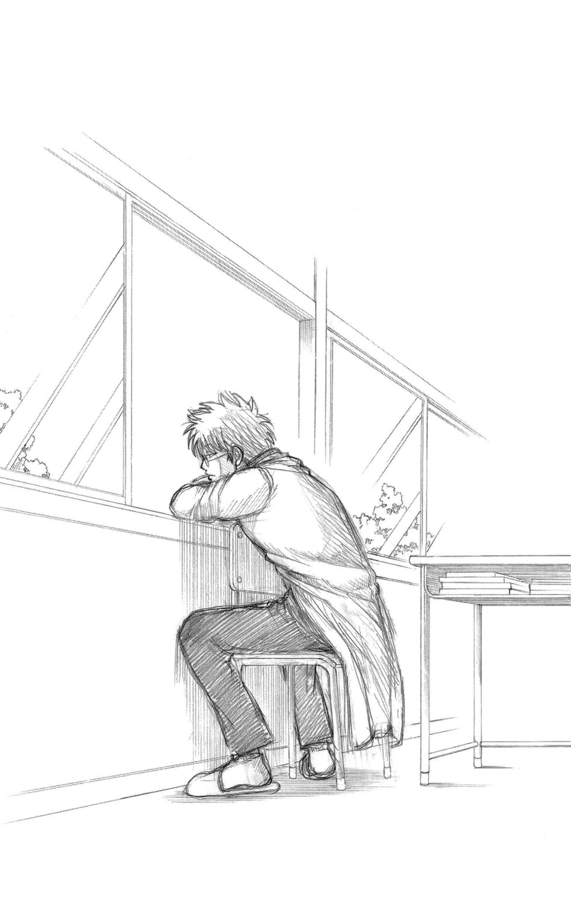
オマケショート劇場 ３Ｚの昼休み・その４
真剣な顔つきでマヨを啜り、物思いにふける男がいる。
が、昼休みの教室、黙考する生徒はほかにもいた。
桂小太郎である。
着席し、ときおり一点を見つめ、桂の脳裏には、さまざまな疑問や命題が、なんの脈絡もなく去来していた。
たとえばこんなことを考えていた。
――高校の音楽の教科書は、なぜ裏表紙に鍵盤の絵がないのだろう？
小学校と中学校の音楽の教科書は、たいてい裏に鍵盤の絵があって、小学生の頃、桂はそれを叩いて脳内コンサートを幾度となく開いたものだった。高校の音楽の教科書じゃ、それができないではないか。
あるいはまた、こんなことも思い出していた。
――初代ファミスタって、バントしたら外野までボールが転がって、ランニングホームランになっちゃうこともあったよなあ。ピッチャーが外野までボールを追いかけて、あれは物悲しい光景だった。
哲人・桂小太郎の思いは、さらにこんなことにまで及ぶ。
――この割り箸がうまく割れなかったら、俺死ぬ......って思いながら割り箸を割ろうとすると、ちょっぴり緊張するよね。
桂の思索は無辺際で、とどまるところを知らない。こういうことも考える。
――おしりを出した子、一等賞と言うが、あれはどういうわけだろう？ むしろ努力賞がふさわしいんじゃないか。敢闘賞とか。
――おつり、千円札ばかりになってしまいますが、よろしいですか？ ときかれて、こっちが「嫌です」と答えたら、店員さんはどうするんだろう？ 五百円玉でおつり渡されちゃったりして。
――自転車で日本二周、というのも面白いかもしれない。
――なぜあの審査員はヘッドホンを片方しか使わないのだ？
――体育館シューズ。体育館シューズ？
考え続ける桂の目の前を、白い小さな物体が横切った。それはミントン山崎のシャトルだったのだが、そんなもので桂の思索は途切れない。
――ハチャトゥリアンって、なんだっけ？ てか、誰だっけ？
てめっ、総悟！ という怒鳴り声がきこえた。犬猿の仲の二人が例によってモメ始めたようだが、そんなことでも桂の集中力は乱されない。
――『んまい棒』の塩バターコーンわさび味、早く出ろ！
夜空の星々が瞬くように、桂の脳内では連綿と疑問や命題が生まれ、そして流れ去っていく。混沌、複雑怪奇であると同時に、どこか神々しさすら感じさせる、桂の活発な思考活動であった。
しかも、である。
桂はそうやって身じろぎもせず黙考しているだけではなかった。
今、桂の机の上には、オセロの盤が置いてあった。対戦相手はいない。一人で黒と白、両方を担当していた。黒桂と白桂、現状では白桂がやや優勢であった。桂の傍らでは、エリザベスが戦況を見守っている。
オセロの石をつまみ、桂は口を開いた。
「なあ、エリー。俺、筋斗雲乗れるかな？」
ややあって、エリザベスがボードで答えた。
『乗れるよ、きっと』
第一講 無理に崖の上で犯人と対決しなくてもいいんじゃね？ 初出［ジャンプＳＱ． ２００７年12月号］
第二講 昔のジャンプを読みふけっていたせいで大掃除がはかどりませんでした 初出［ジャンプＳＱ． ２００８年１月号］
第三講 誰も見ていないところでミラクルを起こす奴がいる 初出［ジャンプＳＱ． ２００８年２月号］
補講 人に相談する時って、たいがい相談する前に自分の中でもう答えが出てる 書き下ろし
オマケショート劇場 ３Ｚの昼休み 書き下ろし
PROFILE
空知英秋 SORACHI HIDEAKI
１９７９年５月25日生まれ。北海道出身。２００２年週刊少年ジャンプ第42号で読切『だんでらいおん』を掲載、デビュー。２００４年週刊少年ジャンプ２号より『銀魂』連載開始。初連載にして大ヒットとなる。
大崎知仁 OHSAKI TOMOHITO
１９７６年生まれ。広島県出身。第９回ジャンプ小説大賞入選。著書に『ガレージ』『笑わせたるっ』『屋上探偵』『屋上探偵２』など。
ジャンプジェイブックスDIGITAL
銀魂 ３年Ｚ組銀八先生 ３
生徒相談室へ行こう！
著者 空知英秋／大崎知仁
©2015 H.SORACHI／T.OHSAKI
２０１５年10月31日発行
この電子書籍は、ジャンプジェイブックス「銀魂 ３年Ｚ組銀八先生 ３ 生徒相談室へ行こう！」
２０１４年12月31日発行の第16刷を底本としています。
装丁 亀谷哲也［PRESTO］
発行者 鈴木晴彦
発行所 株式会社 集英社
〒１０１－８０５０
東京都千代田区一ツ橋２丁目５番10号
０３－３２３０－６０８０（読者係）
制作所 株式会社ＩＣＥ
本作品の全部また一部を無断で複製、転載、改竄、インターネット上に掲載すること、および有償無償に関わらず、本データを第三者に譲渡することを禁じます。なお個人利用の目的であっても、コピーガードを解除しての複製は、法律で禁じられています。